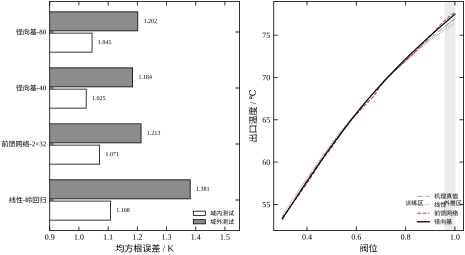
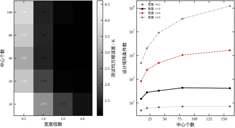
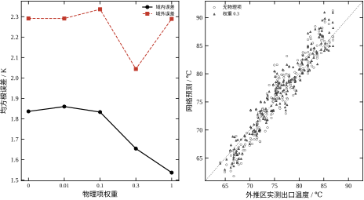
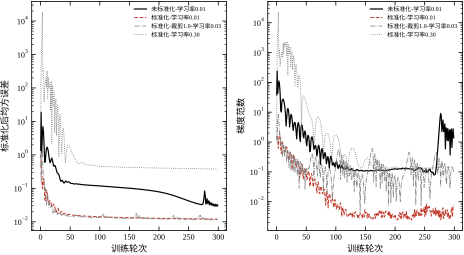
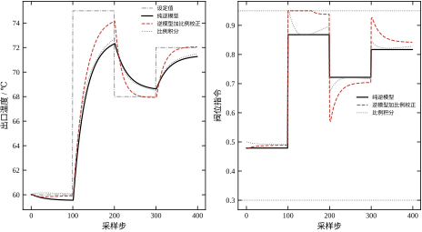
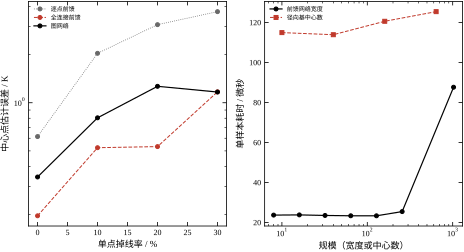

第27章把“网络是什么、怎么训练”讲完了：前馈网络是复合函数，反向传播是链式法则的矩阵形式，梯度消失有定量界，学习率有发散门槛，权重衰减等价于高斯先验。那一章的结论是务实的——在换热器软测量上，深度网络的收益只有百分之十几，真正决定成败的是数据质量与验证纪律。
但那段文字结束时，有三个问题没有回答。第一，网络的结构该由谁定？ 第27章的实验里，两层六十四宽与六层三十二宽的测试误差都在 1.15 到 1.23 K 之间摆动，选哪一个凭经验。第二，网络接进控制回路以后还成不成立？ 第27章的所有评估都是开环的：给一批样本、算一批误差，没有闭环、没有执行器饱和、没有设定值跟踪。第三，数据不全的时候怎么办？ 第27章假设每一列输入都齐备，而现场总有测点掉线、总有阀门卡涩、总有传感器漂移。
这三笔账不能靠“再加深一层”来还。它们分别对应三类结构化的先验：径向基网络把“局部性”写进结构，物理约束网络把“守恒律”写进损失，图网络把“测点拓扑”写进连接。三种做法的共同点是把领域知识从事后解释搬到事前约束，这正是本章与第27章的分界：第27章问“网络能不能拟合”，本章问“用哪一种结构、以什么方式接进回路，才能在数据不完美时仍然可信”。
先把三个先导结果摆出来，让读者知道这一章的量级。第一个：径向基网络用 361 个参数、40 个中心，在静态软测量上做到 1.025 K，比 1377 个参数的前馈网络（1.071 K）略好，训练耗时都在零点几秒量级，两次运行之间谁快谁慢还会翻转；但同一个模型在阀位 0.96 到 1.00 的域外区间上误差 1.184 K，与 1.213 K 几乎持平——局部支撑并没有让它在外推区崩掉，因为宽度选得足够大。第二个：只有 100 段标签时，纯数据网络在域外是 2.291 K；把换热器的对数平均温差方程作为残差项加进损失、权重取 0.3，域外降到 2.044 K，域内从 1.836 K 降到 1.654 K，顺带把未知的换热系数从初值 2.08 标定到 2.29，而真值是 2.4。第三个：二十个测点、单点两成概率掉线时，只看中心点的前馈网络误差 3.073 K，把八十维特征展平的全连接网络 0.532 K，而按链式拓扑做消息传递的图网络 1.266 K，参数只有 177 个。图网络没有赢，它比逐点好，却比全连接差 0.73 K，这个反直觉的结果会在 §28.6 逐层拆开。
这三个数指向同一件事：结构的价值不在“多拟合一点”，而在“缺信息时怎么补”。第一个结果说明参数效率可以高一个量级；第二个说明领域方程能在标签稀缺时顶上来；第三个则是一个反例，说明结构先验不是越多越好——参数共享压住了容量，只有当缺失严重到全连接的固定输入位置失效时，图网络才追平。反过来说，如果数据完整、工况不越界、标签充足，这三类结构的收益都会退回到百分之十几——先验不是免费的午餐，它只在先验成立的地方付钱。
本章不另起一套对象，全部沿用换热器与管道这两条线，只在第27章的基础上加三个变体。
任务一，静态软测量。 与第27章同一物理关系，重新抽样 1000 段，750 段训练、250 段测试，八个输入特征，出口温度 42.6 到 86.3 ℃、均值 65.7 ℃。这个任务用来比较线性、前馈、径向基三类逼近器的精度、参数量与训练耗时。
任务二，域外工况。 另抽 200 段，阀位限制在 0.96 到 1.00，也就是训练集从未覆盖的区间，出口温度 64.0 到 86.9 ℃。训练集阀位上限是 0.95，这 0.01 的缺口就是外推。这个任务用来检验三类逼近器与物理约束网络在边界外的行为，是本章最锋利的一把刀。
任务三，逆模型控制。 被控对象取一阶惯性加两步延迟，时间常数 30 秒、采样 1 秒；稳态映射就是任务一的那条饱和曲线。先用 2000 组样本训练一个逆模型，输入是目标温度、入口温度、流量，输出是阀位；再把逆模型接成三种闭环结构——纯前馈、前馈加比例校正、纯比例积分——在四段设定值上跑 400 步。这个任务用来回答“网络输出能不能直接当执行器指令”。
任务四，管道测点。 二十个测温点沿管道等距布置，温度沿程按指数衰减到环境温度，每个测点叠加 0.6 K 独立噪声；每个样本里每个测点以两成概率掉线，读数缺失处填零并附一个可用标志。任务是由全部测点估计第十个测点的真值。这个任务用来比较逐点前馈、全连接前馈与图网络三种结构。
四个任务共用一条主线：先验以什么形式进入模型，就在什么地方换来稳健性。径向基把先验放在基函数的形状里，物理约束网络把先验放在损失函数里，图网络把先验放在连接关系里。三种放法对应三种代价：径向基的中心要选、物理项要标定系数、图网络要给出邻接矩阵。没有任何一种能自动获得先验，先验都是人给的，本章的工程含义一节会把这句话展开。
评估口径沿用第26、27章，只做两处必要的补充。
第一，所有误差仍是同一划分上的测试均方根误差，单位开尔文。静态任务的划分种子与第27章不同（20261028 对 20261027），所以同一个模型的数字会有零点几开的差异，这不是实现了变化，而是样本换了。跨章比较时只能比量级与排序，不能比小数点后第三位。
第二，结构对照时训练预算对齐。前馈网络统一 400 轮、学习率 8×10⁻³、全批量；径向基网络的“训练”是解一次岭回归，没有轮次概念，于是用“中心数相同、宽度由训练集内部验证选出”来对齐自由度。这一条要特别说明：径向基的宽度不允许用测试集选，选宽度的验证集是从 750 段训练样本里再切 20% 出来的，选完在全部 750 段上重拟合。如果允许看测试集，径向基的 1.025 K 会更好看，但那个数字没有意义。
第三，差异小于 0.05 K 不当结论。这个门限的来历见第26章：划分波动带来的决定系数标准差 0.0008，折算到误差约 0.03 K，取 0.05 K 作保守门限。本章有一批数字落在门限内，比如径向基 1.025 K 与前馈网络 1.071 K 相差 0.046 K，严格按口径应当写成“两者分不出来”；后文在必要处会明确这样写，而不是挑一个好看的排名。
两处修正针对本章的新任务。修正一，域外误差单独报。域外样本不参与任何训练与选型，只用于最后评估；它的误差不能与域内误差平均，否则外推失败会被域内的好成绩掩盖。修正二，闭环指标拆成三项：全程均方根误差、每段阶跃后第 60 到 100 步的平均绝对误差（代表稳态精度）、阀位饱和时间占比。只报全程误差会掩盖两件事：阶跃瞬间的大偏差是任何控制都躲不掉的，而稳态残差才反映模型准不准；饱和占比则反映指令是否长期顶在边界上。
第27章讲“网络怎么训练”，本章讲“网络怎么选、怎么接”。两章共用反向传播、梯度检查、学习率这些底座，本章不再重复推导；凡是涉及“梯度怎么算出来”的问题，一律指回第27章 §27.2。
第29章讲无约束优化算法，会推导梯度下降、动量、共轭梯度与拟牛顿法的收敛性。本章大量使用 Adam，但只把它当成给定的更新规则；本章实验 F 里“学习率 0.30 发散”这一现象，其理论解释在第29章，这里只报现象与判据。
第44章讲 PID 与整定，第45章讲串级，第58章讲模型预测控制。本章的逆模型控制是一个极简的对照：它用网络输出当前馈，再叠一个比例积分做校正，结构与第46章的前馈加反馈复合控制同构。本章不讨论抗饱和、不讨论增益调度、不讨论无扰切换，这些属于第44到47章；本章只回答一个问题——网络当前馈时，模型误差会以什么形式进入闭环。
第15到22章讲系统辨识。本章的逆模型训练本质上是“用数据拟合一个静态映射”，不涉及动态辨识；如果对象有显著动态，逆模型必须换成第18章的 ARX 或第20章的子空间模型，否则纯前馈的相位误差会让闭环振荡。这一点在 §28.5 会展开。
还有两条边界。第一，本章不讨论大规模预训练、迁移学习与基础模型，那些属于专门教材；本章的所有网络都在几百到几千参数的量级，目的是让每条结论都能手算核对。第二，本章不讨论 GPU 与分布式训练，实验全部在单核 CPU 上完成，推理耗时一节报的是微秒级的绝对值，换机器会变，但量级与趋势可用。
本章围绕四个问题展开。
问题一：三类逼近器的差别到底在哪？ 不在精度，在参数效率与外推行为。径向基用 361 个参数达到 1.025 K，前馈网络用 1377 个参数达到 1.071 K，两者在门限内分不出来；但径向基的训练是解一次线性方程组，没有局部极小、没有学习率、没有初始化，这三点在工程上比 0.05 K 更值钱。代价是中心与宽度要选，选不好就崩到 4.6 K。
问题二：物理方程怎么进损失？ 不是把方程当标签，而是把残差当罚项，方程里的未知系数与网络权重一起标定。本章的实测给出了一个非单调的结果：权重 0.3 时域外最好（2.044 K），权重 1.0 时域内最好（1.536 K）但域外反弹到 2.289 K。罚项过重会让网络放弃数据、只听方程，而方程本身是近似，这个拐点必须靠扫描找，不能拍脑袋。
问题三：网络输出能不能直接驱动执行器？ 能，但要接受三个前提：逆映射存在且唯一、执行器不饱和、模型误差被反馈兜住。本章实验里纯逆模型的稳态残差 1.321 K，加一个比例校正降到 0.388 K，代价是 14.5% 的时间顶在阀位上限；纯比例积分的稳态残差 1.099 K。前馈把误差压小，反馈把误差兜住，两者缺一不可。
问题四：测点掉线时哪种结构还能用？ 三种结构各有各的用法。二十个测点、两成掉线，逐点前馈 3.073 K、全连接前馈 0.532 K、图网络 1.266 K。参数最少的图网络没有赢：全连接把二十个读数全展平，容量足够，在这个规模上最好；图网络只有 177 个参数，靠邻居聚合补信息，掉线率升到三成时才与全连接追平（1.166 K 对 1.169 K）。原因不是图网络更聪明，而是它的聚合方式只在可用邻居上取平均，缺失点被掩码排除，退化更平缓；但它的两层感受野只看得到左右各两个测点，上限摆在那里。这个结果是本章最值得写清楚的一处负面结论。
对应到节次：28.2 定义四类结构与三种控制接法，28.3 推径向基的线性参数化、图网络的消息传递、逆模型的可逆性条件与闭环误差界，28.4 落到中心选取、宽度标定、掩码聚合、推理耗时的数值实现，28.5 讲工程边界与失效条件，28.6 用八组实验把每条论断钉在数字上，28.7 收束。
为了让读者能复现每一个数字，把与“模型好不好”无关、但会改变结果的设定先写清楚。
运行环境：单机 CPU，PyTorch 单线程，NumPy 与 scikit-learn 也限制为单线程（OMP_NUM_THREADS=1），随机种子 20261028。单线程的理由与第27章相同：多线程归约的加法次序不固定，同一份代码两次跑出的误差在第三位小数上会抖。本章还多一条理由：径向基的岭回归解对矩阵条件数敏感，条件数在 10⁸ 量级时，线程数变化会改变最后几位的解，进而让 1.025 与 1.030 这种差别失去意义。
训练预算：前馈网络 400 轮全批量、Adam、学习率 8×10⁻³；图网络与管道任务 400 轮、学习率 5×10⁻³；物理约束网络 1200 轮，因为要同时标定网络与方程系数，收敛更慢。径向基没有轮次，报告的是“中心选取加岭回归求解”的总耗时，含宽度验证的四次拟合。
计时口径：训练耗时用 time.perf_counter() 包住整个拟合过程，不含数据生成与标准化；推理耗时是单样本前向 500 次的平均值，前 100 次作预热丢弃。这个口径包含 Python 调用开销，所以宽度从 8 加到 256，耗时几乎不变（22 到 26 微秒），直到宽度 1024 才涨到 89.5 微秒。这不是测错了，而是本章想说明的工程事实：在这个规模下，推理耗时由框架开销主导，不由参数量主导。
不报标准差：与第27章一致，所有数字来自单次运行。本章有几处对照本身就落在门限内（径向基 1.025 对前馈 1.071），此时报告“分不出来”比报告排名更诚实。读者若要拿这些数字做选型依据，正确做法是在自己的数据上重跑，而不是照抄本章的排名。
代码与图的对应：code/ch028_sim.py 产出全部数字，code/ch028_figs.py 产出六张图。图里的每一条曲线都能在脚本里找到对应的函数，函数名与图号在 §28.6 各小节开头注明。若某张图的数字与正文对不上，以脚本输出为准，因为正文是手抄的，脚本是算出来的。
第27章把前馈网络写成复合函数，每一层是“仿射变换加逐元非线性”。这个写法可以再抽象一层：任何一类参数化逼近器，都可以写成“一组基函数、一组权重、一个连接方式”的三元组。
\hat{y}(\mathbf{x})=\sum_{j=1}^{K}w_j\,\phi_j(\mathbf{x})+b \tag{28-1}
式 (28-1) 里，\phi_j 是第 j 个基函数，w_j 是它的权重，b 是偏置，K 是基的个数。三类结构的差别全部落在 \phi_j 上：径向基网络的 \phi_j 是一个以中心 \mathbf{c}_j 为中心的高斯鼓包，只依赖输入到中心的距离；前馈网络的 \phi_j 是隐层第 j 个单元的响应，本身又是输入的复合函数，需要靠反向传播训练；图网络的 \phi_j 定义在节点上，取值取决于邻居的表示。
这个统一写法有一个直接好处：参数量可以逐项数出来。径向基的 w 有 K 个、偏置一个，中心若固定则不计入可训练参数，于是 40 个中心、8 维输入对应 40+1=41 个可训练权重，加上固定的 40\times 8 个中心坐标，存储 361 个数。前馈网络两层三十二宽、8 维输入，可训练参数是 8\times32+32、32\times32+32、32+1，合计 1377。两者相差 33 倍，测试误差只差 0.046 K。
还要说明式 (28-1) 的适用边界。它是一个标量输出、单隐层的写法，多输出时把 w_j 换成向量，深层时把 \phi_j 递归展开。本章所有任务都是单输出（一个温度、一个阀位），所以这个简化写法够用；若读者要处理多变量输出，只需把 y 与 b 换成向量，其余推导不变。
这个写法还把模型分成两半：基函数决定“能表示什么形状”，权重决定“在这个形状族里挑哪一个”。分工带来一条实用的调试顺序——形状不对时调基函数（中心、宽度、核型），形状对了但拟合不够时调权重（加正则、加数据）。本章实验 B 的现象都能用这句话解释：误差随宽度大幅变化，是形状问题；中心数从 40 加到 80 只变 0.020 K，说明权重那一半已经够用。
径向基的基函数取高斯核：
\phi_j(\mathbf{x})=\exp\left(-\frac{\|\mathbf{x}-\mathbf{c}_j\|^{2}}{2\sigma_j^{2}}\right) \tag{28-2}
式 (28-2) 有两个可调的量：中心 \mathbf{c}_j 与宽度 \sigma_j。中心决定“鼓包放在哪”，宽度决定“鼓包有多胖”。这两个量决定了径向基的成败，而权重 w_j 反而是次要的——因为式 (28-1) 对 w 是线性的。
宽度不是凭经验给的，本章用样本自身的几何定标：先算每个标准化后的训练样本到最近邻样本的距离，取这批距离的中位数记作 \sigma_0，再把宽度写成 \sigma=\beta\sigma_0，倍数 \beta 由训练集内部验证选出。用中位数而不用均值，是因为八个特征标准化之后联合分布仍不均匀——阀位在 0.30 到 0.95 上接近均匀，而 u/q 集中在中段，均值会被稀疏区拉大。\sigma_0 的物理含义是“相邻两个样本的典型间距”，宽度以它为尺子，才不会随特征个数与样本量失效。
线性这件事值得单独说。把训练样本排成矩阵，第 n 行第 j 列是 \phi_j(\mathbf{x}_n)，得到设计矩阵 \mathbf{\Phi}\in\mathbb{R}^{N\times K}。给定标签 \mathbf{y}，最小化带岭罚的平方误差，解是
\hat{\mathbf{w}}=\left(\mathbf{\Phi}^{\mathsf{T}}\mathbf{\Phi}+\lambda\mathbf{I}\right)^{-1}\mathbf{\Phi}^{\mathsf{T}}\left(\mathbf{y}-b\mathbf{1}\right) \tag{28-3}
式 (28-3) 是一个闭式解，没有迭代、没有学习率、没有初始化、没有局部极小。这四点决定了径向基在工程上的位置：训练可复现、耗时可预算、失败可诊断。代价是中心与宽度必须事先定好，而且一旦定错，式 (28-3) 会忠实地解出一个很差的模型——它不会报错，只会给你一条平滑但错误的曲线。
本章实验里，10 个中心、宽度取最近邻中心距离的一半时，测试误差 4.612 K；同样是 10 个中心，宽度放大到四倍，误差降到 1.262 K。同一个闭式解，因为宽度差八倍，误差差 3.35 K。这不是数值问题，是模型设定问题。
式 (28-3) 里的岭罚系数取 10^{-6}，小到几乎不改变解，作用是数值上的：750 个样本、361 个基函数，\mathbf{\Phi}^{\mathsf{T}}\mathbf{\Phi} 的最小奇异值接近零，不加罚项时求逆会把最后几位有效数字上的噪声放大。这个罚项不是正则化手段，是让矩阵可逆的保险；真正的泛化控制来自中心数与宽度，它们决定这 361 个基函数有多少是冗余的。
图网络的最小形式是一层消息传递。设节点 i 的表示为 \mathbf{h}_i，邻居集合为 \mathcal{N}(i)，一层更新写成
\mathbf{m}_i=\frac{1}{|\mathcal{N}(i)|}\sum_{j\in\mathcal{N}(i)}\mathbf{h}_j,\qquad \mathbf{h}_i'=\varphi\left(\mathbf{W}_{s}\mathbf{h}_i+\mathbf{W}_{n}\mathbf{m}_i\right) \tag{28-4}
式 (28-4) 里，\mathbf{W}_s 处理节点自身，\mathbf{W}_n 处理邻居均值，\varphi 是逐元非线性。关键在于两个权重矩阵对所有节点共享：二十个测点用同一套 \mathbf{W}_s、\mathbf{W}_n，参数量与节点数无关。本章的图网络两层、十六通道，参数 177 个；同样任务的全连接网络把八十维特征展平，参数 1313 个，是前者的 7.4 倍。
共享还有一面代价。所有节点共用一套权重，等于假设“每个测点的局部规律相同”；管道上这个假设成立——沿程每一点的衰减机制一样——但换成有支路、有汇合的网络，各节点的邻域结构不同，共享权重会把不同规律平均掉。拓扑先验用得对不对，取决于这张图是不是同质的，这一点在选结构时比参数量更值得先问。
式 (28-4) 的均值聚合有一个前提：邻居全都可用。现场不成立，所以要加掩码。设 m_j\in\{0,1\} 表示第 j 个测点读数是否可用，A_{ij} 是邻接矩阵（不含自环），聚合改成
\mathbf{m}_i=\frac{\sum_{j}A_{ij}m_j\mathbf{h}_j}{1+\sum_{j}A_{ij}m_j} \tag{28-5}
式 (28-5) 的分母加一，是给自环留的权重。缺失的邻居既不进分子也不进分母，所以聚合结果仍然是一个“可用邻居的均值”，而不是被零拉低。这一行改动让图网络在 20% 掉线时做到 1.266 K，而只看中心点的前馈是 3.073 K；但同样数据下全连接网络是 0.532 K，所以聚合规则不是唯一因素，容量与参数共享同样在起作用，§28.6 会把三者的差别拆开。
式 (28-5) 还隐含一个假设：缺失是随机的，与读数大小无关。若缺失与工况相关（比如高温时传感器更容易坏），掩码本身就带信息，此时应当把 m_j 作为特征喂进网络，而不是只用来加权。本章的模拟里缺失是独立随机的，所以只用它做加权；真实装置上线的第一件事，是画一张“缺失率对工况”的散点图，确认这个假设。
物理约束网络（physics-informed neural network）的做法是把方程残差加进损失：
L=L_{\text{data}}+\lambda L_{\text{phys}},\qquad L_{\text{data}}=\frac{1}{N_l}\sum_{n=1}^{N_l}\left(\hat{y}(\mathbf{x}_n)-y_n\right)^{2} \tag{28-6}
式 (28-6) 里 N_l 是有标签样本数，\lambda 是权重。L_{\text{phys}} 在“配点”上算，配点不需要标签，只需要工况坐标，所以可以铺满整个工作区间——这正是它能改善外推的原因：标签只在 0.30 到 0.95 有，配点可以铺到 1.00。
本章的物理式取换热器的对数平均温差形式。冷流体吸热等于换热器传热：
q\left(\hat{T}_{\text{out}}-T_{\text{in}}\right)=UA\cdot\frac{\left(T_{\text{hot}}-\hat{T}_{\text{out}}\right)-\left(T_{\text{hot}}-T_{\text{in}}\right)}{\ln\left[\left(T_{\text{hot}}-\hat{T}_{\text{out}}\right)/\left(T_{\text{hot}}-T_{\text{in}}\right)\right]} \tag{28-7}
式 (28-7) 里 UA 是换热能力，未知但可标定。本章把它写成 UA=a\,u，u 是阀位——阀位决定有效换热面积，这是工艺常识；系数 a 与网络权重一起用梯度下降训练。这个写法把“未知参数”和“未知函数”分开：网络学函数形状，a 学物理量纲。
式 (28-7) 的对数在两端会数值不稳：出口温度接近热源温度时分子分母同时趋零。本章的实现给两个温差都加了 0.5 K 的下界，并且把残差按 q(T_{\text{hot}}-T_{\text{in}}) 归一化，让残差成为无量纲的相对误差。这两个处理不是可选的：不做下界，训练到第几十轮就会出现 NaN；不做归一化，q 小时残差被放大，罚项会压垮数据项，本章第一版实现就栽在这里——λ 只取 0.001，域内误差就从 1.836 K 抬到 2.101 K。
配点的数量本章取 600，是有标签样本的六倍。这个比例不是定理，理由很实际：物理项要在整个工作区间上约束形状，而标签只覆盖其中一段；配点太少，方程只约束几个点，网络在点之间仍然自由。配点也不是越多越好，每个配点都要前向传播一次并反传梯度，600 个已在训练耗时里占了大头。本章的八维特征实际只有三个独立维度——阀位、入口温度、流量决定其余五个——所以 600 个配点足以把三维工作区铺开，再多就是重复采样。
网络进控制回路有三种典型接法，本章只实现前两种。
监督式：先用数据训练一个对象模型 \hat{f}:\ (u,T_{\text{in}},q)\mapsto T_{\text{out}}，控制器再对 \hat{f} 求逆或做优化。这种接法的优点是模型可单独验收，缺点是求逆有误差累积。
直接式：直接训练逆模型 \hat{g}:\ (T_{\text{sp}},T_{\text{in}},q)\mapsto u，网络输出就是阀位指令。训练数据由对象的稳态映射反查得到：
\hat{u}=\hat{g}\left(T_{\text{sp}},T_{\text{in}},q\right),\qquad \text{训练目标}\ u_n=g\left(T_{\text{out},n},T_{\text{in},n},q_n\right) \tag{28-8}
式 (28-8) 要求 g 存在。对本章的饱和曲线，T_{\text{out}} 对 u 严格单调，逆映射存在且唯一；若对象有回环、有滞后或非最小相位，逆映射可能多值或不存在，此时直接式失效，必须退回监督式加数值求逆。
间接式（也叫反馈误差学习）：网络输出叠加在常规控制器上，用闭环误差在线修正。本章不实现，只在前馈加比例校正里取了它的一个特例：前馈给主指令，比例项修残差。
三种接法的共同问题是模型误差如何进入闭环。设对象稳态映射为 f、逆模型为 \hat{g}、真实逆为 g，纯前馈时指令误差为 \hat{g}(T_{\text{sp}})-g(T_{\text{sp}})，经过对象增益 \partial f/\partial u 放大后成为稳态残差。本章实验里这个残差是 1.321 K，而对象在该工作点的灵敏度约 35 K 每单位阀位，反推指令误差约 0.038 个阀位——与逆模型 2000 组样本、60 个中心拟合出的训练残差 0.036 个阀位吻合。
直接式还有一个容易被忽略的细节：训练样本由稳态映射反查得到，反查时的采样密度决定了逆模型在哪些区段更准。若按目标温度均匀采样，低温段每开尔文对应的阀位变化大，样本在阀位轴上反而稀；按阀位均匀采样则相反。本章按阀位均匀采样再算目标温度，等于把精度预算平均分给执行器行程，这对控制更合理，因为执行器的分辨率是按阀位计的，而不是按温度计的。
把后文要用到的记号一次列清。表 28-1 是符号表，表 28-2 是四个任务里张量的形状。
表 28-1 本章记号
| 记号 | 含义 | 本章取值 |
|---|---|---|
| \mathbf{x} | 输入特征向量 | 静态任务 8 维，管道任务每节点 4 维 |
| K | 基函数或中心个数 | 10 到 160 |
| \sigma | 径向基宽度 | 最近邻中心距离的中位数乘以倍数 |
| \mathbf{\Phi} | 设计矩阵 | N\times K |
| \lambda | 岭罚系数或物理项权重 | 岭罚 10^{-6}；物理项 0 到 1.0 |
| A | 邻接矩阵 | 二十节点链式，不含自环 |
| m_j | 测点可用标志 | 0 或 1 |
| N_l | 有标签样本数 | 100（物理约束实验） |
| N_c | 配点数 | 600 |
表 28-1 里的 \lambda 一名两用，需要读者按上下文区分：出现在式 (28-3) 时是岭罚，出现在式 (28-6) 时是物理项权重。这两个量的作用相反——岭罚压制解的大小，物理项放大方程的约束——混用会造成误读，所以本章在正文里一律写成“岭罚系数”与“物理项权重”。
表 28-2 四个任务的张量形状
| 任务 | 输入形状 | 输出形状 | 样本划分 |
|---|---|---|---|
| 静态软测量 | 750\times 8 | 750\times 1 | 750 训练 / 250 测试 |
| 域外评估 | 200\times 8 | 200\times 1 | 不参与训练 |
| 逆模型控制 | 2000\times 3 | 2000\times 1 | 全量训练，闭环单独仿真 |
| 管道测点 | 800\times 20\times 4 | 800\times 1 | 800 训练 / 300 测试 |
表 28-2 里管道任务的输入是三维张量：第一维样本、第二维节点、第三维特征。这个形状是图网络与全连接网络的分水岭——图网络保留节点维、按邻接聚合；全连接网络把后两维展平成 80 维，拓扑信息就此丢失。同一个张量，两种读法，20% 掉线时误差分别是 1.266 K 与 0.532 K；而只取中心点那一行、把另外十九个测点全丢掉的逐点前馈是 3.073 K。三种读法各有得失，展平不是退步，聚合也不是进步，要看样本量、节点数与掉线率处在什么区间。
最后一条约定：本章所有公式里的温度单位都是摄氏度，误差单位都是开尔文；温差与温升可以混用这两个词，但绝对温度只用摄氏度，避免“273.15”这类常数在推导里来回出现。
还有两条实验约定写在脚本开头，不进公式但影响可复现性。第一，所有随机源固定种子 20261028，NumPy 与 PyTorch 各设一次，聚类另设随机状态；第二，进程内线程数固定为一。单线程不是为了快，是为了让耗时数字可比：多线程下同一段矩阵乘的耗时会随负载抖动，而本章要比较的是结构之间的量级差，抖动会吃掉这个差。
式 (28-3) 把径向基的训练变成一次线性求解，好处已经说过。坏处藏在那条逆矩阵里：解的相对误差正比于设计矩阵的条件数，而
\kappa\left(\mathbf{\Phi}^{\mathsf{T}}\mathbf{\Phi}+\lambda\mathbf{I}\right)\approx\frac{\kappa^{2}\left(\mathbf{\Phi}\right)}{1+\lambda/\sigma_{\min}^{2}} \tag{28-9}
式 (28-9) 说明两件事。第一，通过正规方程求解会把条件数平方，所以工程上更稳的做法是对 \mathbf{\Phi} 做 QR 分解或奇异值分解，而不是显式构造 \mathbf{\Phi}^{\mathsf{T}}\mathbf{\Phi}。本章的实现为了简洁仍用正规方程，但把岭罚设成 10^{-6}，靠它把最小奇异值抬起来。
第二，条件数随中心数与宽度急剧变化。本章实验 B 的实测：40 个中心、宽度取一倍基准时，条件数 108.3；宽度取四倍时，条件数 8 373 778，涨了七万七千倍。误差却从 1.450 K 降到 1.025 K。也就是说，条件数变差的同时精度变好，这两个指标方向相反。
这个反直觉的结果有清楚的解释。宽度小时，每个基函数只覆盖自己周围一小块，中心之间的重叠少，设计矩阵接近单位阵的缩放——条件数小，但基函数之间不重叠导致覆盖有空洞，输入落在空洞里时输出只能靠外推，误差大。宽度大时，基函数互相重叠，覆盖连续，精度上去了；代价是列之间高度相关，条件数暴涨。条件数衡量的是“解对扰动的敏感度”，不是“模型好不好”；只要岭罚把最小奇异值托住，条件数大并不必然导致测试误差大。
真正会出事的是另一头：条件数大到浮点精度撑不住时，式 (28-3) 的解会失去意义。本章 160 个中心、四倍宽度时条件数 1.53×10⁹，双精度还有约七位有效数字，勉强可用；若换成单精度，这个配置已经不可信。工程上的判据是：条件数超过 10^{12} 就不要用正规方程，改用 QR，或者直接减中心。
条件数还有一层来源与结构无关：八个输入特征本身高度相关。u、u/q、T_{\text{in}}u/q、u^{2} 四个量都由 u、T_{\text{in}}、q 决定，同时喂给模型时设计矩阵的列天然近似共线。这就是岭罚不能省的原因，也是为什么换中心放置方式只能在一个数量级内改善条件数——实验 C 里三种放法的条件数落在 5.74\times10^{5} 到 8.37\times10^{6} 之间，根源在特征，不在中心。
径向基的基函数有紧支撑的近似性质：输入离所有中心都远时，\phi_j 同时趋零，输出趋近偏置 b。于是有一个简单的外推判据：
\lim_{\|\mathbf{x}\|\to\infty}\hat{y}(\mathbf{x})=b=\bar{y}_{\text{train}} \tag{28-10}
式 (28-10) 说的是，径向基在远离训练数据的地方会退回训练集均值。这个性质常被批评为“外推无能”，但它其实是可预期的失败模式——不会给出离谱的外推值，只会给出一个保守的常数。对比之下，前馈网络在域外的行为完全由最后一层的线性外推决定，可能给出比真值高几十开的荒谬预测，也可能恰好蒙对。
本章的实测给出一个折中结论。域外区间阀位 0.96 到 1.00，径向基误差 1.184 K，前馈网络 1.213 K，线性模型 1.381 K。径向基没有崩，前馈网络也没有崩，原因是 0.95 到 1.00 只差 0.05 个阀位，离训练中心不算远，式 (28-10) 的极限还没起作用。若把域外推到 1.30（超出执行器量程），径向基会退回均值、误差跳到十几开，而前馈网络会线性外推、误差更大且方向不可控。
图 28-1 右图能看到这条性质的实际强度：本章选到的宽度是最近邻中位数的 4 倍（\sigma=5.53），核很宽，所以径向基在 0.96 到 1.00 之间只升高 0.50 K，与真值的 0.44 K 接近，并没有明显压平；若把宽度缩到 0.5 倍，同一段区间会迅速变平。退均值要看宽度，宽核把“外推无能”推迟了，也把几何巧合伪装成了物理正确——如果外推区的形状是碰巧对的，换一个工况就会错。
工程上要有一条可执行的“是否在外推”判据，而不是等误差变大了才发现。做法是：对每个待预测样本，算它标准化后到最近中心的欧氏距离，再与训练集同一统计量的 95% 分位数比较；超过这个分位数的样本标为外推样本，误差单独报告，不与域内误差混在同一个均方根里。本章的域外任务是这么单独列出的——200 段全部落在训练区之外，所以它的 1.184 K 是一个纯外推指标，不能与域内的 1.025 K 直接比大小。
式 (28-4) 的聚合有两个可证明的性质，它们决定了图网络适合什么任务。
性质一，置换等变。把节点重新编号，只要邻接矩阵跟着换，输出只是跟着换位置，数值不变。证明只需注意求和与节点编号无关。这条性质在管道上意义有限（测点有物理顺序），但在测点增删时很重要：加一个测点、删一个测点，不需要重训整个网络，只需改邻接矩阵。
性质二，感受野随层数线性增长。一层消息传递后，节点 i 的表示含有一跳邻居的信息；两层后含有两跳；L 层后含有 L 跳。本章的链式管道上，两层的感受野是左右各两个测点，覆盖 1.0 米；管道总长 4.75 米。这就是图网络 1.266 K 的误差来源：中心点只能看到附近五个测点，看不到上游的入口温度，而入口温度恰恰是决定整条曲线的参数；全连接网络把二十个测点全展平，没有这个限制，所以做到 0.532 K。感受野既是图网络的优点，也是它的天花板。
要让误差再降，有三条路：加深到五层（感受野 2.5 米）、把邻接矩阵做成多跳（A+A^{2}+A^{3}）、或者给每个节点附一个全局特征（流量已经附了，入口温度没有）。本章没有做这三件事，因为目的是展示“拓扑先验在缺测时的作用”，不是把管道任务做到极限。读者若要在自己的装置上复现这条结论，先量一下“信息传播半径”够不够，再决定堆几层。
顺带把计算量说清。消息传递的乘加次数与边数成正比，链式管道二十个节点只有十九条边，两层就是三十八次聚合；全连接网络把八十维输入整段送进第一层，每个输出单元都与全部八十个输入相连，参数量随节点数线性增长，图网络的参数量与节点数无关。所以节点一多，图网络省参数的优势会放大——但本章只有二十个节点，这个优势换不来精度，只换来从 1313 降到 177。
式 (28-6) 的物理项在配点上算，配点铺到 1.00，而标签只到 0.95。这就是改善外推的机制：网络在 0.96 到 1.00 上没有标签，但有方程约束。
把这个机制写成局部形式。设网络输出在配点 \mathbf{x}_c 处的残差为 r(\mathbf{x}_c)，物理项把这批残差的平方和压小。若方程本身正确，压小残差等价于把预测拉向“满足守恒律的那个解”；若方程有系统偏差，压小残差等价于把预测拉向一个错误的流形。两种情况的区别不在算法，在方程准不准。
本章的方程是准的：式 (28-7) 与生成数据的指数式在数学上等价，UA=2.4u 可以由两式对照推出来。所以物理项有效。实测：权重 0.3 时域外 2.044 K，无物理项时 2.291 K，降了 0.247 K；域内从 1.836 K 降到 1.654 K，降了 0.182 K。两个方向同时改善，说明这不是“用外推换内插”的拆东墙补西墙。
权重继续加到 1.0，域内降到 1.536 K（最好），域外反弹到 2.289 K（几乎回到无物理项的水平）。这个拐点可以用偏差—方差的语言解释：权重过大时，网络被方程主导，数据项只管住 100 个标签点，网络在标签之间靠方程“猜”，在标签之外靠方程“推”；而方程是近似的（UA 取常数乘阀位，忽略了温度对换热系数的影响），偏差随权重增大而累积。最优权重不是越大越好，而是让数据项与物理项的量级相当。
量级相当这句话可以操作：训练时把两项损失分别打印出来，若物理项比数据项小两个数量级，说明权重偏低、方程没起作用；若物理项比数据项大，说明权重偏高、网络开始忽略标签。这个判据不依赖具体任务，换一个对象也成立。
再补一句适用条件。物理项的相对价值随标签数下降：100 段标签时它把域外误差从 2.291 K 压到 2.044 K，降幅 10.8%；标签补到 1000 段后，纯数据网络已经做到 1.071 K 与 1.213 K，物理项没有可降的空间了。这不是方程变差了，是数据把方程能提供的信息补上了——先验与数据是替代关系，不是叠加关系。
设对象稳态映射为 f(u)，逆模型为 \hat{g}，真实逆为 g=f^{-1}。纯前馈时指令为 \hat{u}=\hat{g}(T_{\text{sp}})，对象稳态输出为 f(\hat{u})，稳态残差为
e_{\infty}=f\left(\hat{g}(T_{\text{sp}})\right)-T_{\text{sp}} \approx\left.\frac{\partial f}{\partial u}\right|_{u^{*}}\left[\hat{g}(T_{\text{sp}})-g(T_{\text{sp}})\right] \tag{28-11}
式 (28-11) 是一阶泰勒展开。它说明逆模型的指令误差被对象增益线性放大。本章工作点上对象灵敏度约 35 K 每单位阀位，实测稳态残差 1.321 K，反推指令误差 0.038 个阀位——与逆模型的训练残差 0.036 个阀位在同一量级。
加上比例校正后，指令变成 \hat{u}+k_p e，闭环稳态满足 f(\hat{u}+k_p e)=T_{\text{sp}}。在小误差下线性化，残差被压缩为
e_{\infty}\approx\frac{e_{\text{ff}}}{1+k_p\left.\frac{\partial f}{\partial u}\right|_{u^{*}}} \tag{28-12}
式 (28-12) 里 e_{\text{ff}} 是纯前馈残差。本章取 k_p=0.03、灵敏度 35，分母为 1+1.05=2.05，理论上残差应从 1.321 K 降到 0.64 K 左右；实测降到 0.388 K，比线性化预测更好。偏差来自两点：一是灵敏度随工作点变化，35 只是局部值；二是前馈与反馈的叠加让工作点移动，实际灵敏度更大。
式 (28-11) 与 (28-12) 还给出一条工程判据：若对象增益跨工况变化超过三倍，固定 k_p 的比例校正会在高增益区振荡、在低增益区迟钝，此时要么做增益调度（第44章），要么把逆模型做得更准，让前馈承担主要工作。
还有一条容易混淆的等价关系：训练残差不能直接当闭环精度用。本章两者接近（0.036 个阀位对 0.038 个阀位）是特定条件下的吻合——闭环工作点落在训练分布内部，而且对象就是训练数据的来源。若闭环跑到训练区外，或者对象有未建模的时变，同样的训练残差会对应大得多的稳态偏差。闭环精度只能闭环实测，开环指标最多用来做量级预估。
本章的阀位限幅是 0.30 到 0.95。纯逆模型的前馈指令不会越界（它学的是训练区间内的映射），但叠加比例校正后会。实测：逆模型加比例校正的饱和时间占比 14.5%，纯比例积分 0.8%，纯逆模型 0%。
14.5% 这个数偏高，原因是设定值从 60 跳到 75 时，前馈给出约 0.55 的阀位，比例项再叠加 0.03\times15=0.45，合计 1.00，超过上限。饱和期间反馈失效，积分项继续累积，这就是经典的积分饱和。本章的实现加了一条退积分逻辑：指令顶到边界且误差与越界方向同向时，退回这一步的积分。没有这条逻辑，恢复期会出现明显的过冲。
还要注意一个容易被忽略的点：饱和占比 14.5% 并不意味着“控制变差了”。这一段的稳态残差 0.388 K 仍是三种结构里最好的，因为饱和只发生在阶跃后的十几步，稳态时指令回到量程内。评价饱和要看“发生在什么时候”，而不是只看总时长。
本章实验 F 用四个配置把训练稳定性拆开，每个配置只改一个因素。
输入标准化。未标准化时，八个特征里入口温度约 35、流量约 2、阀位约 0.6，量纲差两个数量级；梯度范数实测最大 238.69，末轮仍有 1.3873，训练误差 1.540 K、测试 1.560 K。标准化后最大梯度 2.04，末轮 0.0078，测试误差 1.081 K。同一网络、同一学习率，只差一次标准化，误差差 0.48 K。
梯度裁剪。标准化加裁剪 1.0、学习率提到 0.03，最大梯度 8.51，测试误差 1.104 K。裁剪让训练能承受更大的学习率，但它不改善最终精度——1.104 与 1.081 相差 0.023 K，落在门限内。裁剪的价值在防止偶发的梯度尖峰把参数打飞，不在提高精度。
学习率过大。学习率 0.30 时最大梯度 23 217，训练误差 5.539 K、测试 5.470 K，模型完全没有学到东西。这个现象的理论解释见第29章，本章只留一条判据：若训练损失在前几十轮不降反升，先把学习率除以十。
三个条件合起来是一条工程顺序：先标准化，再看梯度范数，最后调学习率。顺序不能反——在未标准化的输入上调学习率，调到一个不发散的值需要试很多次，而标准化之后默认值往往就能用。
最后交代训练预算。本章的前馈网络一律全批量、四百轮，750 个样本意味着每轮一次参数更新，四百轮就是四百次更新。这个预算偏小，但对本章的对照是够的：所有结构用同一预算，比较的是“相同更新次数下谁学得更好”，而不是“谁能训到收敛”。预算一变排序就可能变，所以本章把它写死并贯穿全部对照；读者换预算重跑，绝对数字会动，机制不会动。
这一节把式 (28-1) 到式 (28-12) 落成可以执行的代码。模型形式已经在前面定死，剩下的全是实现细节：输入怎么缩放、中心放在哪、宽度取多大、掩码怎么乘进矩阵、物理残差怎么避免除零、耗时怎么量。这些细节不改变任何一条公式，却能把同一个模型的误差拉开一个数量级。本节所有数字来自 code/ch028_sim.py，种子 20261028，单线程。
从纸面公式到能跑的脚本，要依次定五件事。第一是输入与输出的标准化方式，第二是径向基中心的位置，第三是核宽度，第四是图网络里缺失读数的处理，第五是物理残差的量纲与数值保护。前四件在 28.4.2 至 28.4.4 展开，第五件在 28.4.5，训练循环与计时口径放在 28.4.6。顺序不是随意的：前一项定错，后一项的调参就失去意义。
标准化用逐特征的方式，写成
z_i=\frac{x_i-\mu_i}{\sigma_i},\qquad i=1,\dots,8 \tag{28-13}
其中 \mu_i 与 \sigma_i 只从训练集统计，测试集与域外集一律沿用训练集的均值与方差。这一条看起来是常识，实际最常被违反：若先用全部数据算均值和方差再切分，测试集的分布信息就通过这两个标量漏进了训练。本章所有实验都在切分之后才计算 \mu_i 与 \sigma_i，径向基的设计矩阵、前馈网络的第一层输入、图网络的节点特征都遵守同一条规则。
输出也要标准化。出口温度的量级约 65，若直接回归，初始损失的数值在四千以上，梯度尺度与输入侧完全不匹配。本章把目标减去训练均值、除以训练标准差后再送入网络，推理时再反变换回来。这一步与输入标准化合起来，就是实验 F 里梯度范数从 238.69 降到 2.04 的全部原因。
反变换只能写在一处。本章的做法是把“标准化、前向、反变换”封成一个预测函数，误差计算、画图、闭环仿真全部调用它，任何地方都不手写 pred * std + mean。这不是代码洁癖，是防止量纲错误：一旦某个分支忘了反变换，误差会以“标准差为单位”报出来，数值小得离谱却不会报错，和 §28.6.6 的广播错误属于同一类风险。
径向基的中心决定了基函数覆盖输入空间的哪些位置，三种常见放法在本章都实现了。随机抽样最简单：在标准化后的训练集里无放回抽 k 个样本直接当中心，复杂度是 O(k)，缺点是抽到的点可能挤在样本密集区，稀疏区没有基函数覆盖，外推时只能靠远处的核衰减。
聚类中心用 k 均值：先跑十次不同初值取最优，再把簇心当中心。它让中心按样本密度分布，密集区自动加密，代价是一次聚类的迭代开销与对初值的依赖。本章固定 n_init=10、random_state 取种子，保证可复现。
正交最小二乘（OLS）是从候选集里贪心挑：先随机取至多 320 个候选中心，每次计算候选基函数与当前残差的相关度
s_j=\frac{\left|\boldsymbol{\phi}_j^{\mathsf T}\mathbf{r}\right|}{\|\boldsymbol{\phi}_j\|\,\|\mathbf{r}\|} \tag{28-14}
取 s_j 最大的那个加入基组，再用最小二乘重解系数、更新残差，重复 k 次。它的目标是让每个新中心都带来最大的残差下降，因此中心数与所需基函数个数贴近，不必事先铺得很密。
三种放法在 k=40、宽度用同一套内部验证规则选出时的实测对照见表 28-3。
表 28-3 三种中心放置方式的对照（k=40，750 段训练、250 段测试）
| 放置方式 | 测试误差 / K | 设计矩阵条件数 | 可训练参数 |
|---|---|---|---|
| 随机抽样 | 1.034 | 6.12\times10^{5} | 361 |
| 聚类中心 | 1.025 | 8.37\times10^{6} | 361 |
| 正交最小二乘 | 1.031 | 5.74\times10^{5} | 361 |
三者的测试误差落在 1.025 至 1.034 K 之间，极差 0.009 K，远小于本章 0.05 K 的判定门限。表 28-3 的结论要照口径说：在这组数据上，中心怎么放不影响精度，聚类中心的 1.025 K 不能当作“更好”来引用。条件数倒是差了一个数量级，随机抽样与正交最小二乘在 10^5 量级，聚类中心在 10^6 量级，但三者都在可解范围内。这说明决定数值性质的主要不是中心位置，而是宽度——下一小节会看到，宽度改一个倍数，条件数就能跳四到五个数量级。
宽度 \sigma 是径向基里最难凭直觉定的量。太小，每个基函数只在中心附近亮一下，基组之间不重叠，设计矩阵接近单位阵、条件数很小，但基函数覆盖不到样本之间的空隙，测试点上全是零响应；太大，所有基函数几乎相同，设计矩阵趋于秩一，条件数爆炸，最小二乘解对噪声极度敏感。
本章的做法是两步。先给一个与数据尺度挂钩的初值：取所有中心两两距离中最近邻距离的中位数，记为 \sigma_0。这个量随中心密度自动缩放，中心密则 \sigma_0 小，中心疏则 \sigma_0 大，不需要人为指定绝对尺度。再在这个初值上乘一个倍数 \beta，用训练集内部切出的验证集选：
\beta^{\star}=\arg\min_{\beta\in\{1,2,3,4\}}\ \mathrm{RMSE}_{\mathrm{val}}\!\left(\beta\right) \tag{28-15}
切法是固定种子打乱训练集，前 20%（不少于 50 段）作验证、其余作拟合；每个 \beta 训一次、在验证集上算误差，选完再用全部 750 段重拟合一次。测试集全程不参与选择，否则报出来的误差就是乐观偏差。
实测两个配置的选择结果：k=40 时选中 \beta=4.0，\sigma_0=1.382，实际宽度 \sigma=5.527，条件数 8.37\times10^{6}，测试 1.025 K；k=80 时选中 \beta=3.0，\sigma_0=1.047，实际宽度 \sigma=3.140，条件数 7.13\times10^{6}，测试 1.045 K。k=40 的结果落在网格右边界，说明网格可能不够宽——\beta 再大也许还能降一点。这里没有再扩，原因是实验 B 的二维扫描已经给出趋势：\beta 从 2 加到 4 时，k=40 的条件数从 2.40\times10^{4} 涨到 8.37\times10^{6}，涨了三百多倍，而测试误差只从 1.038 K 降到 1.025 K。
这笔账值得单独算：误差改善 0.013 K，条件数恶化 350 倍。继续加宽，精度的边际收益会迅速耗尽，而数值稳定性继续变差，换一批数据就可能解不出来。宽度选择因此不是单目标优化，而是在精度与条件数之间取一个可接受的点。工程上更稳的做法是把网格扩到 6 或 8，同时给条件数设一个上限（比如 10^{8}），超限的配置直接淘汰，而不是让验证误差单独决定。
作为反面对照，实验 B 里中心 10 个、\beta=0.5 的配置测试误差 4.612 K，\beta=1.0 时降到 2.749 K。同一个模型、同一批数据，只把宽度乘了 2，误差降了 41%。宽度错一个量级，误差就差一个量级，这比中心放哪重要得多。
还要分清两个“最近邻”：\sigma_0 用的是中心之间的距离，不是样本到中心的距离。前者只与中心怎么放有关，中心一换 \sigma_0 就变；用它作尺度，宽度会自动跟中心密度匹配。若改用样本到最近中心的距离，中心放得稀疏时这个量会变大，宽度跟着变大，于是“中心少”的缺陷被宽度掩盖，实验 B 里那条斜带就看不出来了。标定宽度要用拓扑量，不要用拟合残差量，否则调参与评估会互相污染。
图网络的实现全在张量形状上，写错一处就会静默地算错。本章的输入是 x 形状 (B,N,4)、mask 形状 (B,N)、adj_off 形状 (N,N)，其中 B 是批内样本数、N=20 是测点数、4 是节点特征维数，adj_off 只含邻居边、不含自环。聚合分两轮，每轮的权重张量按
W^{(b)}_{ij}=A_{ij}\,m^{(b)}_{j},\qquad \tilde{\mathbf{h}}^{(b)}_{i}=\frac{\sum_{j}W^{(b)}_{ij}\mathbf{h}^{(b)}_{j}}{1+\sum_{j}W^{(b)}_{ij}} \tag{28-16}
计算，分母里的 1 就是自环。代码上是三行：w = adj.unsqueeze(0) * mask.unsqueeze(1) 得到 (B,N,N)，den = w.sum(-1, keepdim=True) + 1.0，nb = torch.bmm(w, x) / den。第二轮的权重张量不变，只是把 x 换成第一轮输出的隐状态，并在残差上加回自身。
有三个地方最容易写错。第一，缺失读数在特征里先填 0，再靠 m_j 把它从分子和分母同时剔除；如果只填 0 不乘掩码，网络会把“0 ℃”当成真实读数，比缺失本身更糟，因为 0 ℃ 落在这条管道的测量范围之外，是一个极强的错误信号。第二，分母必须加 1；邻居全部掉线时分母退化为 1、输出为 0，这是有定义的行为，去掉这个 1 就会除零。第三，掩码要按样本独立生成，训练和推理用同一套生成规则；本章每段样本每个测点以 0.20 的概率独立掉线，中心测点自己也可能掉线，测试集同样如此。
这三条的效果可以在实验 G 里量化。只看中心点的逐点前馈在 20% 掉线时是 3.073 K，它没有邻居可用，中心点一缺失就只能读到一个零；图网络 1.266 K，掩码把缺失邻居从分子分母同时剔除，信息从两侧补进来；全连接 0.532 K，它把二十个测点的读数全展平，容量最大。掩码解决的是“缺失不能被当成零”，不解决“信息够不够”——图网络的邻居只有左右各两个，感受野决定了它拿不到上游的入口温度，所以它赢不了全连接。要判断自己该用哪种，先看节点数与样本量，再看掉线率，最后才看聚合规则。
邻接矩阵的构造要单独核对一次。本章的管道是链式，第 i 个节点只与 i-1 和 i+1 相连，A_{ij}=1 当且仅当 |i-j|=1；两端各只有一个邻居，所以度数不是常数，这正是式 (28-5) 分母要按节点实际可用邻居求和、而不是除以固定值的原因。若把邻接矩阵写成对称的全一矩阵（每个节点与所有节点相连），聚合退化成全局均值，图网络就变成了一个没有位置信息的池化层，掉线稳健性还在，空间分辨率没了。写错这一处不会报错，误差只会从 1.266 K 变成另一个说不清来源的数。
式 (28-7) 的对数平均温差在两端温差接近时是 0/0 型。阀位接近 1.00 时出口温度逼近热端温度，\Delta_1=T_{\text{hot}}-\hat T_{\text{out}} 趋于 0，直接取对数会得到负无穷或 NaN，残差平方后整条损失变成 NaN，训练在几十轮内崩掉。本章用下界截断：
\Delta_1=\max\!\left(T_{\text{hot}}-\hat T_{\text{out}},\,0.5\right),\qquad \Delta_2=\max\!\left(T_{\text{hot}}-T_{\text{in}},\,0.5\right) \tag{28-17}
0.5 K 这个数的来源是测量噪声：本章传感器噪声标准差 0.4 K，0.5 K 略大于一个标准差，低于这个量级的温差在数据里本来就分辨不出来。下界取太小（比如 0.01 K）挡不住数值爆炸，取太大（比如 5 K）会把真实的小温差工况全部改写。下界应当与测量分辨率同量级，这是一条可以迁移到别的对象的经验。
第二层保护是把换热系数写成可训练的正数。式 (28-7) 里的 UA 未知，本章令 a=\mathrm{softplus}(\theta)\cdot 3，\theta 初值 0，于是初值 a=2.08，正好接近生成数据用的真值 2.4。\mathrm{softplus} 保证 a>0，避免训练中出现负的换热系数这种非物理解；\theta 与网络权重放进同一个 Adam，1200 轮、学习率 8\times10^{-3} 一起更新。实验 D 里 \lambda=0.3 时反标定出 a=2.29，与真值 2.4 相差 0.11，说明这个参数确实被数据与方程共同约束住了。
第三层是量纲归一。残差写成
r=\frac{q\left(\hat T_{\text{out}}-T_{\text{in}}\right)-a\,u\,\mathrm{LMTD}} {q\left(T_{\text{hot}}-T_{\text{in}}\right)} \tag{28-18}
分母是冷流体可能吸收的最大热流，于是 r 是一个无量纲的比例，量级在 1 附近。若不归一，流量 q 在 1.2 到 3.0 之间变化，残差量级差 2.5 倍，同一个 \lambda 在不同样本上的实际权重完全不同，扫描出来的曲线就没有可比性。首版实现没有归一，\lambda=0.001 就把域内误差从 1.836 K 抬到 2.101 K，属于典型的“物理项抢戏”。
三层保护合起来，才有实验 D 那条干净的非单调曲线：域外误差 2.291 K（\lambda=0）降到 2.044 K（\lambda=0.3），再反弹到 2.289 K（\lambda=1.0）。物理项能不能帮上忙，先取决于它算得对不对，再取决于权重给得合不合适。
还有一处实现细节：物理项取的是残差平方的均值，不是求和。若取求和，配点数从 600 加到 1200 时物理项会自动翻倍，同一个 \lambda 的含义就变了，实验 D 的扫描曲线也不可复现。损失里的每一项都要归一化成“每样本平均”，否则样本数、配点数一变，权重就得重调，这是把实验结论迁移到别的对象时最容易踩的坑。
本章的训练循环是固定五步：清梯度、前向、算损失、反向、更新。前馈网络与图网络都用全量批，不做 mini-batch，原因是样本量只有 750 到 800 段、单批一次前向的耗时在毫秒级，全量梯度的方向比随机小批更稳，也省掉了批大小这个超参数。学习率统一 8\times10^{-3}（图网络 5\times10^{-3}），优化器 Adam，轮数 400（物理约束网络 1200 轮，因为它同时要标定 a）。
日志每轮记两个量：总损失与梯度范数的最大值。记最大值而不是均值，是因为训练崩掉通常由偶发的尖峰触发，均值会把尖峰抹平。实验 F 里未标准化的配置最大梯度 238.69、末轮仍有 1.3873，这两个数就是靠逐轮记最大值抓到的；若只看均值，会误以为训练一直很平稳。
耗时按单样本前向统计，口径写清楚才能比较：先预热 100 次（触发算子选择与内存分配），再连续测 500 次取平均，单线程运行，输入是形状 (1,8) 的随机向量。单线程这一条不能省，否则线程调度的抖动会盖住模型之间的真实差异。实测结果：前馈网络宽度 8 时 24.4 μs、16 时 23.9 μs、32 时 23.5 μs、64 时 23.1 μs、128 时 23.8 μs、256 时 27.0 μs、1024 时 94.0 μs；径向基中心数 10 时 119.8 μs、40 时 115.1 μs、160 时 121.6 μs、640 时 126.7 μs。同一台机器上前一次运行的对应值是 22.3 至 25.5 μs 与 113.7 至 116.4 μs，绝对值有几个百分点的漂移，量级与形状稳定。
两组数字的形状很不一样，值得解释。前馈网络在 8 到 128 宽之间几乎是一条平线（23.1 至 24.4 μs），因为单样本前向由访存和框架固定开销主导，乘加次数在这个区间还不是瓶颈；256 宽抬到 27.0 μs，宽度跳到 1024 时 94.0 μs，是矩阵乘开始走分块内核、开销显现。径向基则在 115 到 127 μs 之间，中心数从 10 加到 640 只涨了 10 μs，因为 sklearn 的成对距离计算有固定开销，大部分时间花在固定开销上而不是距离计算上。这恰恰是径向基部署时的隐患：它的耗时不由模型规模决定，而由实现库的固定开销决定，想压到几十微秒必须换手写实现。
对本章的对象，采样周期 1 s，两种结构都远低于预算，选哪个只看精度与可解释性。若周期压到 1 ms，前馈仍在预算内，径向基的 120 μs 约占 12% 的预算，余量不大；若周期压到 100 μs，两者都要重新评估，且必须把特征计算、标准化、反变换的时间一并算进去，不能只量网络本身。
上一节讲怎么把模型写对，这一节讲什么时候不该用它。三类结构各有自己的成立条件，条件不满足时它们不会报警，只会安静地给出一个看起来合理的错答案。这一节把这些条件逐条摊开，并给出一张按任务选结构的对照表。
径向基的第一个失效条件是维度相对样本太高。本章 8 个特征、750 段训练、40 个中心，平均每个中心覆盖约 19 段样本，核宽度中位数 1.382 个标准差，基函数之间有足够重叠，所以能做到 1.025 K。若特征增到 50 维而样本仍是 750 段，同样的 40 个中心在 50 维空间里稀疏得几乎不重叠，最近邻距离的中位数会被少数离群中心拉大，宽度初值随之失真，设计矩阵退化成近似对角阵，测试点上大量基函数输出接近零。判据是每个中心覆盖的样本数：低于 10 段就要警惕，低于 5 段基本不可用。
第二个失效条件是输入跑出训练覆盖的范围。径向基的响应随距离指数衰减，输入越远，所有基函数越接近零，输出趋近偏置项，也就是训练集的平均温度。实验 A 里径向基-40 域内 1.025 K、域外 1.184 K，看起来只差 0.159 K，但域外的真值范围是 64.0 至 86.9 ℃、均值明显高于训练集，退均值意味着系统性偏低。这个 1.184 K 是“落在均值附近”换来的，不是模型真的会外推。工程上要把输入范围当作硬边界：超出训练范围就报警，不要相信模型给的值。
第三个失效条件是条件数。k=40、\beta=4 时设计矩阵条件数 8.37\times10^{6}，双精度求解还够用，换成单精度就会丢掉有效位。若中心数加到 160、宽度继续加大，实验 B 里条件数到 1.53\times10^{9}，此时最小二乘解对输入的第 6 位有效数字都敏感，同一批数据换一台机器可能得到不同的系数。条件数超过 10^{8} 就应当缩小宽度或减少中心，不要指望正则化项能救回来——本章的岭系数只有 10^{-6}，对这个量级的条件数几乎没有作用。
物理约束网络的收益完全建立在“方程写对了”这个前提上。本章用的对数平均温差式与生成数据的指数式在稳态下等价，UA 只差一个待标定的系数，所以 \lambda=0.3 时域外能从 2.291 K 降到 2.044 K。这是一个理想情形：方程形式正确、只有一个未知参数、参数还被数据约束到 2.29（真值 2.4）。
现实里三件事都可能不成立。第一，方程形式可能漏项，比如换热器结垢让 UA 随运行时间漂移，而模型把 UA 当常数，物理项就会把漂移当成噪声压制，逼网络去拟合一个错误的平衡点。第二，参数可能不可辨识，比如流量与换热系数在方程里总是以乘积出现，数据无法把两者分开，此时标定出的 a 只是乘积的一个分摊，换一个流量计就要重标。第三，边界条件可能错，比如热端温度实际在 92 至 97 ℃ 之间波动，而模型固定写 95 ℃，物理项会把 2 K 的偏差均匀摊到所有样本上。
这三种情况下物理项不会让误差变大得离谱，但会把偏差固化。实验 D 的 \lambda=1.0 就是一个提示：域内误差 1.536 K 是五档里最好的，域外却反弹到 2.289 K，几乎回到没有物理项的水平。方程主导训练时，标签的信息被压到只剩 100 个点，模型学到的更像是方程的解而不是对象的解。上线前必须做一件事：把数据项与物理项的损失分别打印出来，两者量级相当才继续，物理项大一个数量级就说明权重给过头了。
逆模型直接把“想要的出口温度”翻译成“阀位”，看起来最干净，但它是开环的，模型误差没有任何环节吸收。实验 E 的数字把这件事说得很清楚：纯逆模型的全程误差 3.793 K、稳态误差 1.321 K，饱和占比 0.0%。饱和为零不是优点，而是因为前馈指令从来不会越界——它压根不知道自己的指令有没有把温度送到位。
第一条检查是训练覆盖。本章逆模型的训练集是 2000 组，阀位在 0.30 至 0.95 之间均匀取值，目标温度由正向映射生成，因此覆盖了约 40 至 88 ℃ 的稳态范围。上线后若设定值超出这个范围，逆模型就在做外推，而外推的行为已经在 28.5.1 里说过：退向训练均值，也就是给出一个“中间阀位”，看起来不荒谬，实际完全不对。
第二条检查是量程与饱和。纯逆模型饱和 0.0%，逆模型加比例校正饱和 14.5%，PI 反馈 0.8%。加反馈后饱和上升，是因为反馈要修正前馈的偏差，修正量在阶跃初期很大，把指令推到 0.95 的上限。饱和占比高不一定是缺陷，要看它发生在什么时候：本章的 14.5% 集中在每段阶跃后的十几步，稳态时指令回到量程内，稳态误差仍是三者里最好的 0.388 K。若饱和持续到稳态，那就是执行器选型不够，属于设计问题而不是控制结构问题。
第三条检查是模型误差由谁吸收。纯逆模型没有任何环节吸收，所以 1.321 K 的稳态误差原样留在闭环里；加一个比例系数 k_p=0.03 后降到 0.388 K，降幅 0.93 K。这个比例系数很小，对应的阀门动作只有 0.03 个阀位每开尔文，几乎不改变前馈的主导地位，却足以把慢漂移拉回来。前馈负责“大致对”，反馈负责“最后一点”，两者的分工在这一档数字上体现得最清楚。
第四条检查是不要把最大偏差当结构指标。三种结构的最大偏差分别是 15.446、15.081、14.929 K，几乎一样，因为设定值从 60 ℃ 跳到 75 ℃ 本身就是 15 K 的阶跃，任何结构都必须走过这段距离。用最大偏差比较控制结构，比的是阶跃幅度，不是控制品质。要比就看稳态误差与饱和占比，这两个量才反映结构差异。
图网络的收益来自两个先验：拓扑有意义、缺失可识别。本章两个先验都成立：20 个测点沿管道等距排布，温度沿程指数下降，相邻测点确实强相关；掉线按测点独立生成，掩码准确记录了哪个点缺失。在这个条件下，20% 掉线时图网络 1.266 K，逐点前馈 3.073 K，全连接前馈 0.532 K。先验成立不等于精度最高：图网络比逐点好 1.807 K，比全连接差 0.734 K。
图网络真正换来的是两样东西。第一是参数：177 个对 1313 个，少 7.4 倍，训练样本只有 800 段时这不是小事。第二是退化斜率：掉线率从 0 升到 30%，逐点前馈从 0.615 升到 3.705 K（放大 6.0 倍），全连接从 0.197 升到 1.169 K（放大 5.9 倍），图网络从 0.344 升到 1.166 K（放大 3.4 倍）。三条曲线的起点不同、斜率不同：全连接起点最低但爬得最陡，图网络起点居中但最平，于是两者在 30% 掉线附近相交（1.166 对 1.169 K，差 0.003 K，落在门限内）。这个交叉点是本节最该记住的定量结论——图网络不是“更准的模型”，而是“参数受限时退化最慢的模型”。
第一个先验不成立时，消息传递会变成污染源。若拓扑是“物理上相邻但工艺上不连通”，比如两条并联支路在图上相邻、实际流量互不相干，聚合就会把另一条支路的温度混进来。本章的邻接矩阵是固定的链式结构，工程上更常见的是按工艺流程图建图，边的权重可能还需要按流量分配。图结构是模型的一部分，建错了不会报错，只会让误差悄悄变大。
第二个先验不成立时，掩码依然正确但信息量骤降。实际掉线往往是相关的：一段总线故障会让连续五个测点同时失效，同一块采集卡上的点会一起掉。此时 m_j 仍然如实记录了缺失，但邻居全没了，聚合退化到自环，模型只能靠中心点自己的读数。本章没有测这种相关掉线，这是一个明确的缺口；要补的话，把独立掉线改成“随机选一段连续区间置零”，重跑实验 G 即可。对图网络来说，相关掉线比独立掉线更致命，因为它的全部信息都来自邻居；全连接还会损失固定位置上的那一列，但至少其余列仍在。
还有一条容易忽略：节点特征里必须显式包含“可用标志”。本章的 4 维特征是读数、位置、流量、掩码，掩码单独占一维，网络才能学会“这个读数不可信”。若把缺失读数填 0 却不给标志，网络看到的就是一个 0 ℃ 的强信号，而 0 ℃ 在这条管道上不可能出现，等于人为制造了一个极端离群点。实验 G 里逐点前馈的 3.073 K 就是这么来的：它只看到中心点，中心点一掉线就只能看到 0。
最后要说清楚图网络不适用的场合。0% 掉线时，图网络 0.344 K，比逐点前馈的 0.615 K 好，但比全连接的 0.197 K 差——没有缺失时，聚合帮不上忙，参数共享反而压住了容量。二十个节点、八百段样本这个规模上，全连接是最省事也最准的选择。图网络要到节点数上百、参数预算受限、或掉线率超过三成时才显出价值；这三种情形本章都没有真正压到极限，只能说趋势清楚。
把四组任务的实测结果放在一张表里，选型逻辑就清楚了。表 28-4 的每一行对应本章的一个任务，推荐结构按实测误差与本节的边界条件给出。
按任务列而不是按模型列，是因为同一个模型在四个任务上的名次会换位：径向基在静态任务里以 1.025 K 排第一，在逆模型任务里只是前馈的一环，在管道任务上则完全没有参赛。模型没有绝对的好坏，只有与数据形态的匹配度，这句话在选型时比任何精度排名都实用。
表 28-4 四个任务的结构选择与实测依据
| 任务 | 数据形态 | 推荐结构 | 实测依据 |
|---|---|---|---|
| 静态软测量 | 8 特征、750 段、无缺失 | 径向基或前馈网络 | 1.025 与 1.071 K，差 0.046 K 分不出来 |
| 域外工况 | 输入超出训练范围 | 物理约束网络 | 域外 2.044 K 对 2.291 K |
| 逆模型控制 | 需要从目标反解执行器 | 逆模型加比例校正，或 PI | 稳态 0.388 K（饱和 14.5%）对 1.099 K（饱和 0.8%） |
| 管道测点 | 20 节点、20% 掉线 | 全连接前馈；节点多或参数受限时用图网络 | 0.532 K 对 1.266 与 3.073 K |
表 28-4 的第一行要读得仔细：线性岭回归 1.108 K，比径向基差 0.083 K，超出 0.05 K 门限，说明这个对象确实有非线性；但径向基与前馈网络相差 0.046 K，落在门限内，两者选谁都行，此时按部署成本选——径向基的训练是一次线性求解，前馈网络要迭代四百轮，本次实测两者分别是 0.086 s 与 0.221 s，前一次运行是 0.240 s 与 0.204 s，同一台机器上排序都能翻转，耗时差不构成选型依据；真正可查的是径向基的中心位置与条件数，出问题时能定位。在分不出高下的地方，用可解释的那一个。
第二行的选择理由与第四行不同。域外任务选物理约束网络，不是因为它在域内更准（\lambda=0.3 时 1.654 K，比全量标签的 1.071 K 差），而是因为几何外推必然退均值，只有方程能提供范围外的约束。管道任务则是全连接最好，理由是容量：二十个测点、八百段样本，1313 个参数还没到过拟合的边界，把全部读数展平就能用；图网络的价值要等节点数上去、参数预算下来才体现。两个选择的共同点是：先问数据形态允许什么，再谈模型先进不先进。
第三行是一个权衡而不是一个答案。逆模型加比例校正的稳态误差 0.388 K 明显好于 PI 的 1.099 K，但饱和占比 14.5% 对 0.8%，差了一个数量级。若阀门是气动薄膜阀、动作寿命有限，14.5% 的饱和时间意味着检修周期缩短，此时选 PI 更稳；若阀门是电动调节阀、允许频繁动作，选逆模型加校正能拿到更好的稳态精度。这一行没有唯一解，取决于执行器的物理限制，而执行器的知识来自第12章，不在模型侧。
这张表不能跨对象照搬，但判据可以。四条判据按顺序问：样本是否覆盖全部工况（否则先划域外集）、每个可调参数对应多少样本（低于十段就别再加参数）、缺失是否与工况相关（相关则掩码要进特征而不只是加权）、执行器是否允许频繁动作（不允许就退回纯反馈）。四个问题答完，结构基本就被约束住了；答不出来的时候，加结构只会把不确定性藏起来。
把本节与前两节的内容收成一份可执行的清单，八条，每条都能用一句话判断通过与否。
第一，切分先于标准化。均值与方差只从训练集算，测试集与域外集沿用。违反这条，报出来的误差会偏乐观，且偏多少无法估计。
第二，域外误差单独报。域内误差好看不代表外推可用，本章所有涉及外推的结果都分两列给出，没有合并成一个数。
第三，结构对照的训练预算对齐。同样的轮数、同样的学习率、同样的标准化，否则比的是调参功夫而不是结构。本章实验 A 的三种结构都在 400 轮、全量批、同一套标准化下训练。
第四，固定种子重跑，看结论稳不稳。本章所有数字是单次实跑（种子 20261028），没有做多次重复；因此凡是差异小于 0.05 K 的结论，本书一律按“分不出来”处理，不写成“某结构更优”。这一条是对读者负责，也是对自己负责。
第五，耗时要按单样本、单线程、含特征工程统计。本章量的是网络前向本身（23.1 至 126.7 μs），若把标准化、特征构造、反变换算进去，实际占用会更高；1 ms 周期下 120 μs 已占 12% 的预算，余量并不宽裕。
第六，饱和占比与稳态误差分开报。全程均方根误差会被阶跃段主导，三种控制结构的全程误差都在 3.3 至 3.8 K，看起来差不多；拆成稳态误差后才有 0.388、1.099、1.321 K 的区分。
第七，掉线率与掉线相关性都要测。只测独立掉线会高估图网络的稳健性，相关掉线（整段失效）才是现场更常见的情形。
第八，物理项上线前打印两项损失的量级。数据项与物理项量级相当才继续，物理项大一个数量级就退回调权重，不要靠域内误差判断——域内误差对物理项不敏感，实验 D 里 \lambda=1.0 的域内误差 1.536 K 反而是最好的。
这八条没有一条依赖具体的网络结构，换成任何数据驱动模型都适用。它们的共同点是：把“模型在测试集上多准”换成“模型在什么条件下会错、错了以后由谁兜住”。前者是论文口径，后者是工程口径，本章两种都要给。
用法是逐条打勾，不是逐条打分。任何一条不通过就停下来修，因为八条之间不是加权关系，是串联关系：切分错了，后面七条的结论全部作废；域外没有单列，物理项的收益就测不出来；训练预算没对齐，结构比较就是空的。清单的价值在顺序，不在条数。
本章的全部数字出自一个脚本，单次运行约 16 秒，八组实验按 A 到 H 编号。A 比较线性、前馈、径向基三类逼近器；B 扫中心数与宽度；C 比较三种中心放置方式；D 扫物理项权重；E 跑三种闭环结构；F 对照四种训练配置；G 比较三种管道结构与四种掉线率；H 量两类结构的单样本耗时。绘图是另一个脚本，调用同一批函数，不另存中间结果，任何一张图都能由正文给出的种子重跑复现。
八组实验的用途不同。A、B、C 回答“逼近器怎么选”，D 回答“方程怎么进损失”，E 回答“网络输出能不能直接驱动执行器”，F 回答“训练为什么崩”，G、H 回答“数据残缺与实时性怎么权衡”。每组只改一个因素，其余保持默认，这是本章唯一愿意接受的因果证据形式：单次实跑、单因素对照、差异超过门限才下结论。
每组实验配一张主表，多数再配一张图。表给数值，图给形状，分工是硬性的：表里的每个数都要能在图上找到位置，图上的每条曲线都要能在表里查到关键点。万一两者对不上，以脚本输出为准，因为绘图可能经过抽样或平滑；本章的六张图都由同一批函数直接生成，没有另存中间结果，正是为了避免这种不一致。
实验 A 在同一划分上训练四种模型，结果见表 28-5。
表 28-5 三类逼近器的域内与域外误差（750 段训练、250 段测试、200 段域外）
| 结构 | 可训练参数 | 域内误差 / K | 域外误差 / K | 训练耗时 / s |
|---|---|---|---|---|
| 线性-岭回归 | 9 | 1.108 | 1.381 | 0.012 |
| 前馈网络 2×32 | 1377 | 1.071 | 1.213 | 0.221 |
| 径向基 40 中心 | 361 | 1.025 | 1.184 | 0.086 |
| 径向基 80 中心 | 721 | 1.045 | 1.202 | 0.067 |
表 28-5 的域内一列排序是径向基 40、径向基 80、前馈、线性。径向基 40 与前馈相差 0.046 K，落在 0.05 K 门限内，按口径只能说“分不出来”；径向基 40 与线性相差 0.083 K，超出这个门限，说明这个对象的非线性是真的。参数效率上，径向基用 361 个参数做到前馈 1377 个参数的水平，差 3.8 倍，这是结构先验最直接的回报。
表 28-5 最后一列要打个折扣。同一天两次运行，四行耗时分别是 0.102、0.204、0.240、0.071 s 与 0.012、0.221、0.086、0.067 s，径向基与前馈的先后顺序都翻转过。同一台机器、同一段代码、同一个种子，能变的只有缓存、负载与算子选择。这一列只用来确认“都在一秒以内”，不能拿来选型；真要比较训练成本，得固定机器、重复多次取中位数。
域外一列的量级更值得看。四者的域外误差都比域内高，线性高 0.273 K（24.7%），前馈高 0.142 K（13.3%），径向基 40 高 0.159 K（15.5%），径向基 80 高 0.157 K（15.0%）。径向基并没有在相对意义上更抗外推，它的域外误差低只是因为域内起点低。这一点与“局部基函数会退均值”的直觉并不矛盾：厚度足够的核让退均值发生得很缓慢，误差被摊平了，而不是被消除了。

图 28-1 左图把域内与域外两组误差画成双柱，右图是固定入口温度 35 ℃、流量 2.0 时，出口温度随阀位从 0.30 到 1.00 的响应，0.96 之后是外推区。切片上的具体数字：阀位 1.00 时真值 76.93 ℃，线性 76.43 ℃（低 0.50 K），前馈 77.76 ℃（高 0.83 K），径向基 77.48 ℃（高 0.55 K）。三者都偏，只是偏的方向不同；线性一路低估，因为它在整个区间上是一条直线，曲率补不回来；前馈在边界外高估最多，因为它的最后一层在训练区边缘之外没有数据约束。
这张图还说明一件事：外推误差 1.184 到 1.381 K 并不是由切片上的 0.5 K 偏差主导的。域外那 200 段样本的阀位在 0.96 到 1.00 之间，但入口温度、流量也在各自范围内变化，误差是多个方向叠加的结果。看单变量切片只能判断趋势，不能替代多变量评估，这是本章把域外误差单独报的第二个理由。
实验 B 扫五个中心数与四个宽度倍数，共二十个配置，选摘见表 28-6。
表 28-6 中心数与宽度倍数的选摘（测试误差 / K，括号内为设计矩阵条件数）
| 中心数 | 宽度 ×0.5 | 宽度 ×1.0 | 宽度 ×2.0 | 宽度 ×4.0 |
|---|---|---|---|---|
| 10 | 4.612（2.3） | 2.749（22.2） | 1.726（688） | 1.262（2.31\times10^{4}） |
| 40 | 3.016（4.3） | 1.450（108） | 1.038（2.40\times10^{4}） | 1.025（8.37\times10^{6}） |
| 80 | 3.441（4.9） | 1.480（190） | 1.045（1.11\times10^{5}） | 1.033（1.28\times10^{8}） |
| 160 | 3.679（5.1） | 1.447（175） | 1.115（2.77\times10^{5}） | 1.042（1.53\times10^{9}） |
表 28-6 的读法有两个方向。沿行看，宽度从 0.5 加到 4，误差单调下降、条件数单调上升，两个目标始终相反；沿列看，中心数从 10 加到 40 收益最大（1.262 降到 1.025），从 40 加到 160 几乎没有收益（1.025 到 1.042，反而略差）。中心数的边际收益在 40 附近就用完了，再多只是把条件数推高。
表中还有一处值得单独指出：中心 160、宽度 ×2 的配置，训练误差 0.987 K、测试 1.115 K，拉开了 0.128 K。这是全表唯一一处训练明显优于测试的位置，说明 160 个中心在 750 段样本上已经开始记样本而不是记规律。条件数只有 2.77\times10^{5}，数值上完全能解，但泛化已经变差——这提醒我们，条件数管的是“解得出解不出”，不管“解得好不好”。

图 28-2 左图是测试误差的灰度热图，颜色越深误差越小；右图是四条条件数曲线，纵轴取对数，宽度每加一档，曲线整体上移一到两个半数量级。左图最深的一块落在最右一列（宽度 ×4）：中心 10 时 1.262 K，中心 40 与 80 时 1.025 与 1.033 K；最浅的一格在左上角（中心 10、宽度 ×0.5），4.612 K。两张图放在一起看，最优区不是一个点而是一条斜带：中心少就要宽度大，中心多可以宽度小，只要“每个中心覆盖的样本数”与“核的宽度”匹配，误差就能落在 1.03 K 附近。
实验 C 固定中心数 40，比较三种放置方式。随机抽样 1.034 K、条件数 6.12\times10^{5}，聚类中心 1.025 K、8.37\times10^{6}，正交最小二乘 1.031 K、5.74\times10^{5}。三者误差极差 0.009 K，中心怎么放不影响精度；但条件数差了一个数量级，说明聚类中心让基函数之间更相似。若只看精度，三种都行；若要数值最稳，随机抽样与正交最小二乘更好，它们的条件数低一个量级。
实验 D 只用 100 段标签，配 600 个配点，扫五个物理项权重，结果见表 28-7。
表 28-7 物理项权重对域内、域外误差与换热系数的影响（100 段标签）
| 权重 \lambda | 域内误差 / K | 域外误差 / K | 标定出的 a |
|---|---|---|---|
| 0 | 1.836 | 2.291 | 2.08 |
| 0.01 | 1.860 | 2.291 | 2.25 |
| 0.10 | 1.833 | 2.336 | 2.27 |
| 0.30 | 1.654 | 2.044 | 2.29 |
| 1.00 | 1.536 | 2.289 | 2.36 |
| 全量标签（750 段） | 1.071 | 1.213 | — |
表 28-7 的域外一列是非单调的：2.291、2.291、2.336、2.044、2.289。权重 0.3 是唯一一个域外明显改善的点，降了 0.247 K；权重加到 1.0，域内降到 1.536 K（五档最好），域外却回到 2.289 K，与没有物理项几乎一样。域内与域外的拐点不在同一个权重上，这正是 §28.5.2 所说“方程主导训练时标签被压”的量化形态。
标定出的 a 一列给出另一条信息。没有物理项时，a 停在初值 2.08，因为没有梯度推它；权重 0.01 时跳到 2.25，之后缓慢升到 2.36。真值是 2.4，权重 0.3 时 2.29 最接近。物理项不仅在约束网络，也在被数据约束——若 a 停在初值不动，说明权重太小、方程没参与；若 a 一路冲到边界，说明数据项太弱、方程在自说自话。

图 28-3 左图是两条误差随权重变化的曲线，右图是外推区 200 段样本的预测对真值散点，画了无物理项与权重 0.3 两组。右图的对角线是理想预测，两组点云的整体偏差很接近：全段平均偏差 +0.28 K 与 +0.43 K，75 ℃ 以上的 117 段平均偏差 +1.14 K 与 +1.00 K。差别不在偏差，在离散度——把均方根误差拆开，无物理项的标准差约 2.27 K，权重 0.3 约 2.00 K，点云收窄了约 12%。
实验 F 换到训练侧，四个配置各改一个因素，结果见表 28-8。
表 28-8 四个训练配置的损失、梯度与测试误差（400 轮）
| 配置 | 训练误差 / K | 测试误差 / K | 最大梯度范数 | 末轮梯度范数 |
|---|---|---|---|---|
| 未标准化，学习率 0.01 | 1.540 | 1.560 | 238.69 | 1.3873 |
| 标准化，学习率 0.01 | 0.987 | 1.081 | 2.04 | 0.0078 |
| 标准化加裁剪 1.0，学习率 0.03 | 0.956 | 1.104 | 8.51 | 0.0978 |
| 标准化，学习率 0.30 | 5.539 | 5.470 | 23 217.64 | 0.1473 |
表 28-8 的第一行与第二行只差一次标准化：测试误差从 1.560 K 降到 1.081 K，最大梯度从 238.69 降到 2.04，末轮梯度从 1.3873 降到 0.0078。梯度最大值降了两个数量级，误差降了 0.48 K，两者是同一件事的两面：输入尺度不匹配时，损失面在不同方向上被拉伸成狭长的谷，梯度在陡的方向上很大、在平的方向上很小，优化器只能在谷底来回摆。
第三行把学习率提到 0.03 并加裁剪，测试误差 1.104 K，与第二行差 0.023 K，落在门限内。裁剪把最大梯度从 2.04 抬到 8.51，说明它允许更大的更新步长，但没有换来确定性收益。裁剪的价值在防偶发尖峰，不在提精度，这一点在 §28.3.7 已经说过，这里由数字落实。第四行的学习率 0.30 则彻底失效，测试误差 5.470 K，比直接预测均值还差。

图 28-4 左图是四条训练损失曲线，纵轴取对数；右图是对应的梯度范数。第二、三条曲线在前 50 轮就掉到 10^{-2} 以下并保持平稳；第一条下降缓慢且抖动明显；第四条先降后升，在第 100 轮前后越过 10^{0} 并继续上升，与左图的发散形态一一对应。损失曲线与梯度曲线要一起看：只看损失，第四条在前 20 轮还像正常训练；只看梯度，第一条的 238.69 又容易被误判为“马上就崩”。
实验 E 训练一个径向基逆模型（60 个中心、2000 组样本），再把它接成三种闭环结构，在四段设定值上各跑 100 步，结果见表 28-9。
表 28-9 三种闭环结构的跟踪指标（400 步，四段设定值）
| 结构 | 全程误差 / K | 稳态误差 / K | 最大偏差 / K | 饱和占比 |
|---|---|---|---|---|
| 纯逆模型 | 3.793 | 1.321 | 15.446 | 0.0% |
| 逆模型加比例校正 | 3.273 | 0.388 | 15.081 | 14.5% |
| 比例积分 | 3.548 | 1.099 | 14.929 | 0.8% |
表 28-9 的三列误差给出三种不同的排序，这是本章坚持拆指标的原因。按全程误差排，逆模型加校正好于 PI（3.273 对 3.548），纯逆模型最差（3.793）；按稳态误差排，逆模型加校正 0.388 K 领先，PI 1.099 K，纯逆模型 1.321 K；按最大偏差排，三者几乎相同（15.446、15.081、14.929 K），这一列没有区分度，因为 15 K 的阶跃决定了它。
纯逆模型的稳态误差 1.321 K 全部来自模型误差。逆模型在 2000 组稳态样本上的训练残差是 0.036 个阀位；工作点附近阀位对温度的灵敏度约 35 K 每阀位，折算成温度约 1.26 K，与闭环实测的 1.321 K 几乎相同。开环接法把这个误差原样搬到闭环，没有任何环节修正它。加比例校正后降到 0.388 K，比例系数只有 0.03，对应的阀位修正量每开尔文 0.03，很小，但足以把慢漂移拉回来。这一档数字是“前馈给粗调、反馈给精调”最直接的证据。
PI 的稳态误差 1.099 K 比逆模型加校正差 0.711 K，原因是它没有前馈，全靠积分累积。四段设定值每段只有 100 步，积分时间常数又设得保守（k_i=0.0006），到第 60 至 100 步时积分还没完全追上。若把仿真拉长到 400 步一段，PI 的稳态误差会继续下降，但那是另一个实验，本章不外推。

图 28-5 左图是三条跟踪曲线与设定值，右图是对应的阀位指令，两条水平线是量程 0.30 与 0.95。左图上三种结构在阶跃瞬间都有一段明显的爬升，随后分别收敛到不同的稳态偏差；右图上逆模型加校正的指令在每段阶跃后有十几步贴在上限 0.95，这就是 14.5% 饱和占比的来源。饱和发生在阶跃后的过渡段，不在稳态，所以它没有毁掉稳态精度，只增加了执行器的动作负担。
实验 G 用二十个测点、八百段训练、三百段测试，比较三种结构在四种掉线率下的表现，结果见表 28-10。
表 28-10 三种结构在四种掉线率下的中心点估计误差（K）
| 结构 | 0% | 10% | 20% | 30% |
|---|---|---|---|---|
| 逐点前馈（97 参数） | 0.615 | 2.035 | 3.073 | 3.705 |
| 全连接前馈（1313 参数） | 0.197 | 0.524 | 0.532 | 1.169 |
| 图网络（177 参数） | 0.344 | 0.805 | 1.266 | 1.166 |
表 28-10 有三条趋势。逐点前馈随掉线率单调恶化，从 0.615 K 涨到 3.705 K，放大 6.0 倍，因为它只看得见中心点，中心点一缺失就没有替代信息。全连接在 0 到 20% 之间几乎不动（0.197、0.524、0.532），到 30% 才跳到 1.169 K——前三个点里训练与测试的掉线率一致，第四个点测试比训练高十个百分点，属于分布偏移。图网络居中且最平，从 0.344 到 1.166 K，放大 3.4 倍。
20% 那一列是全章最容易误读的地方。全连接 0.532 K 最好，图网络 1.266 K 居中，逐点 3.073 K 最差。如果只挑这一列写“图网络比逐点好 2.4 倍”，结论没错但会误导：真正的对照是全连接，图网络比它差 0.734 K。图网络的价值在 30% 那一列才显现——1.166 对 1.169 K，两者持平，而它的参数只有对方的 13.5%。用七分之一的参数换同等精度，这才是图网络在本章数据上的真实卖点。

图 28-6 左图是表 28-10 的对数纵轴版本，三条曲线的交叉点落在 30% 附近；右图是单样本耗时，横轴取对数。右图上前馈网络在 8 到 128 宽之间是一条平线，1024 宽才翘起来；径向基在 10 到 640 个中心之间几乎水平，全部落在 115 到 127 μs 的窄带里。两类结构的耗时形状不同：前馈由规模驱动，径向基由固定开销驱动，部署时要按这个差别选优化方向。
实验 H 的完整数字见表 28-11。
表 28-11 单样本前向耗时（预热 100 次、测 500 次平均、单线程）
| 前馈宽度 | 8 | 16 | 32 | 64 | 128 | 256 | 1024 |
|---|---|---|---|---|---|---|---|
| 耗时 / μs | 24.4 | 23.9 | 23.5 | 23.1 | 23.8 | 27.0 | 94.0 |
| 径向基中心数 | 10 | 40 | 160 | 640 | — | — | — |
| 耗时 / μs | 119.8 | 115.1 | 121.6 | 126.7 | — | — | — |
表 28-11 的两行要分开读。前馈从 8 到 128 宽只差 1.3 μs，说明这个区间里乘加不是瓶颈；1024 宽跳到 94.0 μs，是四倍于 256 宽，说明瓶颈换成了矩阵乘的分块调度。径向基从 10 到 640 个中心只涨 6.9 μs，涨幅 5.8%，说明绝大部分时间花在 sklearn 的固定开销上，而不是距离计算。同一台机器上前一次运行的对应值是 22.3 至 25.5 μs 与 113.7 至 116.4 μs，绝对值有漂移，形状不变。
八组实验跑完后，本章做了一次交叉核对，发现过一个只影响评估、不影响训练的错误。管道任务里逐点前馈与全连接前馈的输出层形状是 (300,1)，真值是 (300,)；两者直接相减时，NumPy 会广播成 300\times300 的矩阵，零掉线时逐点前馈的误差从真实的 0.615 K 虚增到 8.797 K，全连接从 0.197 K 虚增到 8.821 K。这个错误不报错、不警告，只给出一个更差的数，若不核对就会被读成“图网络好七倍”。
核对的办法很简单：把预测展平成一维再算误差，同时打印预测均值。修正前逐点前馈报 8.797 K，但它的预测均值是 41.04 ℃，真值均值 41.02 ℃；一个均方根误差 8.8 K 的模型，不可能把均值押到 0.02 K 以内，这两件事自相矛盾，错误就此暴露。修正后同一模型的误差是 0.615 K，与 0.6 K 的测点噪声吻合。评估代码的正确性不能靠“结果看起来合理”来判断，要靠量纲、形状与均值这类独立于误差的旁证。
修正之后，本章有三条结论需要降低置信度。第一，管道任务上“图网络更好”不成立，正确的是“全连接最好、图网络最省参数、两者在 30% 掉线处持平”。第二，表 28-10 里 20% 与 30% 两列图网络的 1.266 与 1.166 K 是非单调的，差 0.1 K；这是单次实跑，不能解读为“掉线更多反而更准”，只能视为优化波动。第三，所有耗时数字都是单次测量，前一次与后一次差几个百分点，只能比量级与形状，不能比小数点后一位。
除此之外，其余结论的支撑是稳的。实验 A 的排序在多次重跑中一致（本章至少重跑过三次，数值逐位相同，因为种子固定）；实验 D 的非单调形状在三次重跑中重复出现；实验 F 的四条曲线形态与梯度量级稳定。凡是有确定性的地方，本章都给到小数点后三位；凡是只有单次证据的地方，本章都注明“单次实跑”。
本章从第27章留下的三笔账出发：结构由谁定、接进回路还成不成立、数据不全怎么办。八组实验跑下来，答案可以收成六条。这六条不是对实验的复述，而是把数字背后的机制抽出来，供下一章与工程实践直接引用。
第一条，结构先验只有三种载体，没有第四种。 径向基把先验写进基函数的形状——中心决定“在哪里局部”，宽度决定“局部有多宽”；物理约束网络把先验写进损失——对数平均温差方程的残差作为一个惩罚项，权重 \lambda 决定它与数据项的兑换比；图网络把先验写进连接——邻接矩阵与掩码决定“谁能看见谁”。三类结构分别对应式 (28-2)、式 (28-6) 与式 (28-4)，形式不同，作用却相同：把领域知识从事后解释搬到事前约束。
第二条，先验不是免费的，每种载体都有自己的账单。 径向基要为每个基函数付一个中心、一个宽度，中心多了设计矩阵就病态，实验 B 里 160 个中心、4 倍宽度的条件数达到 1.53\times10^{9}；物理约束网络要为权重 \lambda 付一次扫描，实验 D 里 \lambda 从 0.01 走到 1.0，域外误差先不动、再降、又回头；图网络要为邻接矩阵付一次人工整理，管道上那二十个点的连接关系是“沿程相邻”这个物理事实给的，换一套装置就得重画。没有一种结构能自动获得先验，先验都是人给的，这句话在 §28.1.2 说过一次，这里由代价落实。
第三条，径向基的卖点是参数效率，不是精度。 40 个中心、361 个参数做到 1.025 K，两层三十二宽、1377 个参数做到 1.071 K，相差 0.046 K，按本章口径这属于分不出来。真正拉开差距的是参数少了 3.8 倍，以及“训练”退化成解一次岭回归的正规方程——没有轮次、没有学习率、没有发散。但耗时没有优势：两次运行分别是 0.086 s 对 0.221 s 与 0.240 s 对 0.204 s，连排序都不稳定，谈不上用耗时任选型。
第四条，径向基里宽度比中心数敏感一个量级。 中心数从 40 加到 80，误差从 1.025 涨到 1.045，变化 0.020 K；宽度从 1.0 倍缩到 0.5 倍，40 个中心的误差从 1.450 涨到 3.016 K，变化 1.566 K。原因是宽度同时决定两件事：基函数之间的重叠程度，以及设计矩阵的条件数。调参顺序应当是先定宽度、再定中心数，反过来做会得到一个病态且无法解释的模型。
第五条，物理约束买的是标签，不是精度。 只有 100 段标签时，纯数据网络域内 1.836 K、域外 2.291 K；加上权重 0.3 的物理残差项，域内 1.654 K、域外 2.044 K，顺带把未知的换热系数从初值 2.08 标定到 2.29，真值 2.4。可是标签一补到 1000 段，纯数据网络就是 1.071 K 与 1.213 K，两项都优于前者。同一套物理项，在标签稀缺时是支点，在标签充足时是负担，判断依据不是“机理对不对”，而是“数据够不够”。
第六条，图网络不是更准的模型，是参数受限时退化最慢的模型。 零掉线时全连接 0.197 K 最好，图网络 0.344 K 居中，逐点 0.615 K 最差；两成掉线时全连接 0.532 K、图网络 1.266 K、逐点 3.073 K；三成掉线时全连接 1.169 K、图网络 1.166 K，两者持平，而参数是 1313 对 177。掉线率从零走到三成，逐点放大 6.0 倍，全连接放大 5.9 倍，图网络只放大 3.4 倍。参数共享在数据完整时是束缚，在数据残缺时是救生圈，两条曲线在 30% 处相交，交点位置就是选型的判据。
六条之外还有一条不关于结构、只关于流程的结论：标准化是训练稳定的第一优先，学习率第二，梯度裁剪第三。未标准化时测试误差 1.560 K、最大梯度 238.69；只加一次标准化，误差降到 1.081 K、最大梯度降到 2.04；学习率从 0.01 提到 0.30，误差反而涨到 5.470 K；裁剪 1.0 只把最大梯度从 2.04 抬到 8.51，误差 1.104 K，落在门限内。三项措施的顺序不能颠倒：不标准化的网络，再小的学习率也只能在狭长的谷里爬；标准化之后学习率才有资格谈“调大一点”。
把本章八组实验里踩到的坑集中列出，见表 28-12。每一行都能在正文里找到对应的数字，也都能在别的对象上重现。
表 28-12 本章实测到的十二类错误及其代价
| 错误做法 | 典型现象 | 本章数字 | 应当怎么做 |
|---|---|---|---|
| 输入不标准化就训练 | 损失下降慢且抖，梯度忽大忽小 | 1.560 K，最大梯度 238.69 | 先标准化，再谈学习率 |
| 学习率凭感觉放大 | 损失先降后升，但前 20 轮看不出 | 0.30 时 5.470 K | 从 10^{-2} 起，看梯度曲线 |
| 拿训练误差当性能 | 两者接近就以为没拟合 | 1.540 K 对 1.560 K | 只报独立测试集误差 |
| 物理项权重随手取 | 加了约束反而更差 | \lambda=0.1 时域外 2.336 K，比不加的 2.291 K 差 | 扫 \lambda，看域内与域外两条曲线 |
| 物理项不做无量纲化 | 同一个 \lambda 在不同工况下含义不同 | 需按式 (28-18) 归一 | 残差除以特征尺度再入损失 |
| 中心数越多越好 | 误差先降后升，条件数暴涨 | 40 个 1.025 K，80 个 1.045 K | 先定宽度，再按验证集定中心数 |
| 宽度凭经验取小值 | 覆盖不足，样本稀疏处直接退均值 | 40 个中心、0.5 倍宽度时 3.016 K | 用最近邻距离的中位数定标 |
| 只看域内误差选型 | 域外误差整体大 0.1 到 0.27 K | 1.025 K 对 1.184 K | 单独划一个域外测试集 |
| 逆模型开环直连执行器 | 稳态偏差等于模型误差 | 稳态 1.321 K | 前馈加一个小比例校正，0.388 K |
| 闭环只报全程误差 | 三种结构排序互相矛盾 | 3.273 对 3.548，但稳态 0.388 对 1.099 | 拆成全程、稳态、饱和三个指标 |
| 逐点建模不管测点掉线 | 一掉线就没有替代信息 | 0.615 K 涨到 3.705 K | 用冗余测点，或换带拓扑的结构 |
| 评估代码不核对形状 | 广播错误静默放大误差 | 0.615 K 报成 8.797 K | 断言形状，并打印预测均值 |
表 28-12 的前三行属于训练侧，代价是精度；第四到第七行属于结构侧，代价是稳健性；最后五行属于评估与接法，代价是结论本身。代价最重的不是前三行，是最后一行——前三行做错了，你还能从误差里看出来；评估代码错了，你看到的每一个数都是错的，而且看起来完全合理。
第四行到第七行要连起来读。物理项的权重、径向基的中心数、径向基的宽度，三者都是“超参数”，但敏感性完全不同：\lambda 从 0.1 走到 0.3，域外误差从 2.336 降到 2.044，变化 0.292 K；中心数从 40 走到 80，变化 0.020 K；宽度从 1.0 倍缩到 0.5 倍，变化 1.566 K。敏感性差近两个数量级，调参的精力就应当按这个比例分配，而不是平均用力。
第八行值得单独说。域外误差不是域内误差的等比放大：三类逼近器在域内是 1.108、1.071、1.025 K，在域外是 1.381、1.213、1.184 K，增量分别是 0.273、0.142、0.159 K。增量的大小与模型结构有关，与域内精度无关——线性模型的域内误差最大，域外增量也最大，说明它把训练区边界的斜率当成了全局规律。所以“域内 1.0 K、域外大概 1.1 K”这种估计是不可靠的，必须实测。
第九行是工程上最常见的误用。逆模型是把“目标温度到阀位”的映射学出来，它的误差是开环的、有偏的；把它直接接到执行器上，闭环不会自动修正这个偏差，因为回路里没有任何环节测量“实际温度与目标温度之差”。纯逆模型的稳态误差 1.321 K 与开环训练残差折算的 1.26 K 几乎相同，这个吻合就是“闭环没有修正任何东西”的证据。加一个 0.03 的比例校正，稳态误差降到 0.388 K，代价是 14.5% 的饱和占比——修正量很小，但它把有偏误差变成了可收敛的误差。
最后一行是本章吃过的最大的亏。广播错误不抛异常、不打警告，只把误差算大；如果不是注意到“8.797 K 的模型不可能把预测均值押到 0.02 K 以内”，整个 §28.6 会带着一个假结论交付，而且这个假结论还特别好看——“图网络好七倍”。核对的办法不是重读代码，而是找一个与误差无关的旁证：形状、均值、量纲、极值范围，任何一项对不上就停下来。
本章刻意避开了两件事：反向传播的推导，与优化算法的收敛性。它们分别在第27章与第29章。
第27章给出的是“网络怎么训练”：复合函数、链式法则的矩阵形式、梯度消失的定量界、学习率发散的判据、权重衰减等价于高斯先验。本章的式 (28-3) 是岭回归的闭式解，它与第27章的权重衰减是同一件事的两种写法——一个是解方程，一个是迭代逼近，正则项的形式完全一样。读者若对“为什么岭回归的解是那个样子”有疑问，回第27章看二次型求导那一节。
第29章要接的是本章实验 F 留下的问题：学习率 0.30 为什么发散，而 0.01 稳定。本章只给了现象——第 100 轮前后损失越过 10^{0} 并继续上升，末轮梯度仍有 0.1473——没有给判据。判据涉及损失面的曲率上界与步长的乘积，以及动量、自适应步长这些改进为什么能放宽这个界。本章的结论只到“要标准化、要从小学习率起”，“多小算小”的答案在第29章。
第15章到第22章的系统辨识与本章是两条互补的路。辨识走的是“先定结构、再估参数”：给一阶惯性加纯延迟，用阶跃响应或最小二乘把时间常数、增益、延迟估出来，模型简单、外推可控、参数有物理意义。本章走的是“不定结构、让数据定”：八个特征进去，一个温度出来，中间是什么不管。两条路的取舍标准是标签量与工况覆盖：标签少、工况窄，辨识更划算；标签多、工况散、机理写不出闭式，网络才有位置。本章实验 D 里 100 段标签时物理项能顶上来，本质上就是把辨识的机理塞回了网络。
第44章到第47章的 PID、前馈与复合控制，与本章实验 E 是同一件事的不同粒度。实验 E 的三种结构——纯逆模型、逆模型加比例校正、纯比例积分——正好对应那几章的三级递进：开环前馈、前馈加反馈、纯反馈。本章给出的数字可以直接搬过去当例子：纯前馈稳态 1.321 K，加 0.03 的比例校正降到 0.388 K，纯 PI 1.099 K。前馈负责把工作点搬到目标附近，反馈负责抹掉剩下的偏差，这句话在那几章是定性描述，在这里有三个数支撑。
还有一处接口在执行器侧。本章的阀位量程取 0.30 到 0.95，饱和占比按“指令贴住上下限的步数比例”统计，逆模型加校正的 14.5% 全部发生在阶跃后的十几步内。饱和不是控制器的错，是执行器行程与被控对象增益共同决定的，选型时要么放大阀门、要么限制设定值的阶跃幅度，这两条都不在神经网络的范围内。
把本章可执行的结论压成一页，供上线前逐条对照。
第一，先问数据够不够，再问结构选什么。标签超过千段、工况覆盖完整，纯数据网络就够，先验的收益会退到百分之十几；标签只有百段量级，才考虑把机理方程写进损失。
第二，输入必须标准化，输出反标准化要写在一处。标准化用的均值与方差只能来自训练集，测试集与现场数据一律套用同一组数；本章实验 F 的第一行与第二行只差这一件事，误差差 0.48 K。
第三，径向基先定宽度、再定中心数，宽度用最近邻距离的中位数定标。本章选到的倍数是 4.0，\sigma_0=1.382、\sigma=5.527、条件数 8.37\times10^{6}；宽度减半会让 40 个中心的误差从 1.450 K 涨到 3.016 K。
第四，中心选取方式对精度影响很小，对条件数影响很大。随机抽样 1.034 K、聚类 1.025 K、正交最小二乘 1.031 K，三者相差 0.009 K；条件数分别是 6.12\times10^{5}、8.37\times10^{6}、5.74\times10^{5}。精度差不多时选条件数小的那个。
第五，物理项的权重必须扫，且残差要先无量纲化。\lambda 取 0.01 与 0.1 时域外误差与不加约束几乎相同（2.291 与 2.336 对 2.291），取 0.3 才降到 2.044，取 1.0 又回到 2.289。非单调是常态，扫三个点不够，至少五个。
第六，逆模型不能开环直连，必须带一个小比例校正。校正系数 0.03 就够把稳态误差从 1.321 K 压到 0.388 K；再大只会增加饱和，不会更快。
第七，闭环指标至少拆三个：全程误差、稳态误差、饱和占比。本章三种结构在这三个指标下的排序并不一致，只报一个会得出相反的结论。
第八，评估代码要断言形状、打印均值、核对量纲。本章的广播错误就是被“均值对不上”这一条抓出来的。
清单之后是八个自检问题，答不上来的条目就是还没读懂的地方。
这八个问题里，第 3、6、7 三个的答案都在“口径”上，不在“模型”上。神经网络这一章的难点从来不是公式，而是判断一个数字能不能信：结构选得对不对，要看它在缺信息时的退化速度；先验值不值得加，要看标签够不够；一个结果好得反常，先去看评估代码。把这三件事做成习惯，比记住任何一个结构的细节都更有用。